<!DOCTYPE html>
<!-- Template by quackit.com -->
<html><head>
		<meta http-equiv="Content-Type" content="text/html; charset=UTF-8">
		<title id="main_title" >Radium manual</title>
                <link rel="icon" type="image/png" href="radium_logo_256x256_colorized.png" sizes="256x256">
                <link rel="icon" type="image/png" href="radium_logo_128x128_colorized.png" sizes="128x128">
                <link rel="icon" type="image/png" href="radium_logo_32x32_colorized.png" sizes="32x32">
                <style>
		
                @font-face { font-family: RadiumFontBold; src: url('DejaVuSans-Bold.ttf'); }
                @font-face { font-family: RadiumFontBold2; src: url('OpenSans-SemiBold.ttf'); }
                @font-face { font-family: RadiumFont; src: url('DejaVuSans.ttf'); }
                @font-face { font-family: RadiumFontMono; src: url('DejaVuSansMono.ttf'); }
                
		body{
			margin: 0;
			padding: 0;
			overflow: hidden;
			height: 100%; 
       		        max-height: 100%;
                        font-family: RadiumFont;
			line-height: 1.5em;
		}
                
		#nav{
			position: absolute;
			top: 0;
			bottom: 0;
			left: 0;
                        right: 0px;
                        margin: 0px;
                        padding: 0px;
			width: 200px; /* Width of navigation frame */
			height: 100%;
			/*overflow: hidden;*/ /* Disables scrollbars on the navigation frame. To enable scrollbars, change "hidden" to "scroll" */
                        overflow-y: auto;
			background: #eee;
		}
		
		main{
			margin-left: 0px;
			padding-left: 10px;
			padding-right: 10px;
			position: fixed;
			top: 0; 
			left: 200px; /* Set this to the width of the navigation frame */
			right: 0;
			bottom: 0;
			overflow: auto; 
		        background: #fff;
		}
                
		.innertube{
		    margin: 0px; /* Provides padding for the content */
                    overflow-y: auto;
		}

                pre
                {
                    background: #eeeeee;
                    border: solid 1px #19A347;  
                    color: #191919;  
                    display: block;
                    font-family: RadiumFontMono;
                    font-size: 16px;  
                    margin: 8px;  
                    padding: 4px;
                    white-space: pre;
                }
                
		p {
			color: #555;
		}
                
                ul[hidden] {
                        display: none
                }

		nav ul {
			list-style-type: none;
			margin: 0px;
			padding: 10px;
                        top-border: 0;
                        bottom-border: 0;
                        top: 0;
                        bottom: 0;
                        left: 0;
                        right: 0;
                        border-bottom: 1px solid #555;
		}

                nav li a {
                    display: block;
                    color: #000;
                    padding: 4px 16px;
                    text-decoration: none;
                }

                nav li {
                    border: 2px solid #555;
                }
                
                nav li .active {
                    background-color: #4CAF50;
                    color: white;
                    top-border: 0;
                    bottom-border: 0;
                }

                nav li a:hover {
                    background-color: gray;
                }
                
		margin: 25px;
		padding: 0px;


		/*IE6 fix*/
		* html body{
			padding: 0 0 0 230px; /* Set the last value to the width of the navigation frame */
		}
		
		* html main{ 
			height: 100%; 
			width: 100%; 
		}

table {
font-family: RadiumFont;
font-style: normal;
border-collapse: collapse;
}

body{
font-family: RadiumFont;
}


h1{
font-family: RadiumFontBold;
}

h2{
font-family: RadiumFontBold;
}

h3{
font-family: RadiumFontBold;
}
                  
b{
    font-family: RadiumFontBold2;
    color: #001175;
}
                  
td, th {
border: 1px solid #dddddd;
text-align: left;
padding: 8px;
}

tr:nth-child(odd) {
background-color: #e8e8e8;
}
tr:nth-child(even) {
background-color: #eeeeee;
}

pre, code {
/*    white-space: pre-wrap; */
/*    margin-left: 50px; */
}

.boxed {
  border: 1px solid green ;
}

blockquote {
  display: inline-block;
}


/* Add a black background color to the top navigation bar */
.topnav {
  overflow: hidden;
  background-color: #e9e9e9;
}

/* Style the search box inside the navigation bar */
.topnav input[type=text] {
    float: middle;
    padding: 6px;
    border: 6px;
    margin-top: 8px;
    margin-left: 8px;
    margin-right: 8px;
}

</style>

    
</head>
	
  <body>		
    
    <main>

      <div class="innertube">
        <body bgcolor="#ffffff">
          <div id="mainbodyholder">
            <div id="mainbody"></div>
          </div>
          <div id="dasfusetest"></div>
	  
        </body>
      </div>
    </main>
    
    <nav id="nav">
      
      <div class="innertube">
        
        <div class="topnav">
          <input id="search_text" oninput="search_changed();" type="text" placeholder="Search..">
        </div>
        
        <div id="main_menu"></div>
        
      </div>
    </nav>

    <script src="fuse.js"></script>
    <!--    <script src="fuzzysort.js"></script> -->

<script>

  function showHide(name) {
    var x = document.getElementById(name);
    if (x.style.display === 'none') {
        x.style.display = 'block';
    } else {
        x.style.display = 'none';
    }
}

function showHide2(divname,linkname) {
    var x = document.getElementById(divname);
    if (x.style.display === 'none') {
        x.style.display = 'block';
        document.getElementById(linkname).innerHTML="Hide";
    } else {
        x.style.display = 'none';
        document.getElementById(linkname).innerHTML="Show";
    }
}

const macos_notes_text = `
      <h3>MacOS notes</h3>
    <UL>
      <LI><b>Alt</b> is often called <b>Option</b> on an Apple keyboard.
      <LI>Pressing <b>Right Cmd</b> is the same as pressing <b>Right Ctrl</b>.
      <LI>If you want to swap <b>Cmd</b> and <b>Ctrl</b>, select <i>Swap Ctrl and Cmd</i> under <i>Edit -> Preferences -> Gui</i>. This will swap <b>Cmd</b> and <b>Ctrl</b> for both mouse operations and keybindings.
    </UL>
    `;
        
const selection_vs_range_text = `
<h3>Selection vs. range</h3>

There are two ways to select notes:
<OL>
  <LI> <b>Selection</b> in the pianoroll.
  <LI> <b>Ranged notes</b> in the <a href="index.html?page=notetext">note-text subtrack</A> (called <b>"range"</b>).
</OL>

If there is <b>no range</b> in the current block, all functions operating on a range will <b>instead</b> work on the <b>selected notes</b> in the current track.

    <p>
      
<h4>Differences between selection and range:</h4>
<UL>
  <LI>A range is all notes within the "range-rectangle" (spanning both lines and tracks), while
    a selection is all notes that has been selected.
  <LI>Selection and range <b>don't share</b> the same <b>clipboard buffer</b>.
  <LI>While <b>selection</b> operates on a track, a <b>range</b> operates on a block.
</UL>
`;


var g_pages = [];

/*******************************/
/*****  GUI                *****/
/*******************************/
const gui_text = `
    

    <h2>GUI Overview</h2>
    <OL align="left" width="50%">
        <LI> <a onclick="showHide('menu')" href="#!">Menus</A> *
          <div id="menu" style="display: none">
            <UL>
              <LI>Use the <b>left alt key</b> to show/hide menus and to start/stop navigitating the menus with the keyboard.
              <LI>You can also stop navigating the menus by pressing <b>Esc</b>.
              <LI>Press <b>Shift + up/down</b> to navigate 4 rows up or down.
              <LI>Press <b>Page up / Page down</b> to havigate 10 rows up or down.
              <LI><b>Right-click</b> a menu entry to configure keybinding for it.
            </UL>
          </div>
        <LI> <A href="index.html?page=editor">Editor</a>
        <LI> <a onclick="showHide('blocklist')" href="#!">Blocklist</A> *
          <div id="blocklist" style="display: none">
            If the current seqtrack is for <b>editor blocks</b>, the blocklist shows a list of all available blocks.
            If the current seqtrack is for <b>audio files</b>, the blocklist shows a list of all available audio files.
            <UL>
              <LI>Click a block to make it the current block
              <LI>Doubleclick a block or audio file to add it to the playlist.
              <LI>Shift + rightclick a block to delete a block or audio file.
            </UL>
          </div>
        <LI><a onclick="showHide('playlist')" href="#!">Playlist</A> *
          <div id="playlist" style="display: none">
            The <b>playlist</b> is a textual representation of the current seqtrack in the <a onclick="showHide('sequencer')" href="#!">sequencer</a>. The playlist does not display more information than the sequencer, but it can be more convenient to use, especially if there is only one seqtrack.
          </div>
        <LI> <a href="index.html?page=mixer">Mixer</A>
        <LI> <a onclick="showHide('mixerstripforcurrentinstrument')" href="#!">Mixer strip for current instrument</A> *
          <div id="mixerstripforcurrentinstrument" style="display: none">
            <UL>
              <LI>Shows a <a href="index.html?page=mixer">mixer strip</a> for the current instrument.
              <LI>The current instrument is also shown in the <a onclick="showHide('instrument')" href="#!">instrument widget</a>.
              <LI>Input MIDI signals are sent to the current instrument.
            </UL>
          </div>
        <LI> Main window lower tabs <!-- <A onclick="showHide('lowertabs')" href="#!">Main window lower tabs</a> -->
<!--
          <div id="lowertabs" style="display: none">
            (under construction)
          </div>
-->
          <UL>
            <LI> <a href="index.html?page=sequencer">Sequencer</a>
            <LI> <a href="index.html?page=instrument">Instrument widget</a>
            <LI> <a onclick="showHide('edit')" href="#!">Edit</A> *
              <div id="edit" style="display: none">
                The edit tab provides various functions to edit notes in the editor. Right-click a button to edit or remove keybinding.
              </div>
          </UL>
        <LI> <a onclick="showHide('bottombar')" href="#!">Bottom bar</A> *
          <div id="bottombar" style="display: none">
            The bottom bar contains elements that might be useful at all times.
	    <UL>
              <LI>The bottom bar is visible in:
		<OL>
		  <LI> The bottom of the main window
		  <LI> The bottom of the mixer, when the mixer runs in its own window.
		  <LI> The bottom of the sequencer, when thes equencer runs in its own window.
		</OL>
	      <LI>Use tool tips to get more information about each element in the bottom bar.
	    </UL>
          </div>
    </OL>

    <h3>Some common terms</h3>
    <UL>
      <LI><i>Block</i> - Everything you currently see in the editor. A song can contain several blocks that you position into the sequencer. Another term is <i>Editor Block</i>. (In trackers, the term is <i>Pattern</i> is often used instead of <i>Block</i>).
      <LI><i>Track</i> - An editor track.
      <LI><i>Seqtrack</i> - A sequencer track.
      <LI><i>Seqblock</i> - The blocks in seqtrack.
        <UL>
          <LI> For editor seqtracks: A seqblock holding an <i>Editor Block</i>.
          <LI> For audio seqtracks: A seqblock holding an audio file.
        </UL>
      <LI><i>Velocity</i> - The volume of a single note.
    </UL>

    <h3>FAQ</h3>
    <UL>
      <LI><b>Q:</b> Why do I have to write "yes" or "no" instead of clicking a button?<br>
        <b>A:</b> Similarly to trackers, Radium is primarily a keyboard-based program. Your hands should normally be placed on the keyboard, so writing "yes" or "no" would normally be the fastest way to respond. In addition, writing "yes" or "no" might also stop you from accidentally do the opposite of what you actually wanted.
    </UL>
` + macos_notes_text;

g_pages.push(
    {text : gui_text,
     name : "gui",
     menu : "gui",
     display : "GUI"
    }
);

const gui_mouse_text = `
    <h3>Mouse</h3>
    <UL>
      <LI> <b>Finetuning</b>:
      <UL>
        <LI>Press <b>Ctrl</b>.
      </UL>
      <LI> <b>Y direction only</b>:
        <UL>
          <LI>Press <b>Shift</b>.
        </UL>
      <LI> <b>X direction only</b>:
        <UL>
          <LI>Press a <b>Windows</b> / <b>Cmd</b> key.
        </UL>
      <LI> <b>Move all automation nodes simultaneously</b>:
        <UL>
          <LI>Press <b>Alt</b>.
        </UL>
      <LI> <b>Reset automation</b>:
        <UL>
          <LI>Press <b>Shift</b> + <b>Alt</b>, and click <b>Right mouse button</b>.<br>
        </UL>
      <LI> <b>Break grid</b>:
        <UL>
          <LI>Press <b>Ctrl</b>. (i.e. do finetuning)
        </UL>
      <LI> <b>Delete</b> object under mouse:
        <UL>
          <LI>Either:
            <OL>
              <LI>Press <b>Shift</b> and click <b>Right mouse button</b> at the same time.<br>
              <LI>Or, press <b>ZL1</b> (the key one step to the left of Z on a <a onclick="showHide('qwerty10')" href="#!">QWERTY</A> keyboard).<br>
                <div id="qwerty10" style="display: none">
                  
                </div>
                <small>(Note: <b>ZL1</b> can easily be reassigned by right-clicking a popup menu entry that has <b>ZL1</b> assigned to it.)</small><br>
            </OL>
            <small>This works for automation nodes, sound objects, plugins, tracks, blocks, seqblocks, notes, etc. It also works to reset instrument effects.</small>
        </UL>
      <LI> <b>Select/unselect</b> something:
        <UL>
          <LI> Press <b>Ctrl</b> key and click <b>Left mouse button</b>.
        </UL>
      <LI> <b>Zoom</b> in or out:
        <UL>
          <LI> Press <b>Ctrl</b> key and use the <b>Mouse scroll wheel</b>.
        </UL>
      <LI> <b>Scroll vertically</b>:
        <UL>
          <LI> Use the <b>Mouse scroll wheel</b>.
          <LI> Below the timeline area in the sequencer you also need to hold a <b>Windows / Cmd</b> key.
          <LI><small>Note that the editor works differently. In the editor, the mouse scroll wheel does the same as Arrow Down and Arrow Up.</small>
        </UL>
      <LI> <b>Scroll horizontally</b>:
        <UL>
          <LI>Press <b>Shift</b> and use the <b>Mouse scroll wheel</b>.
          <LI><small>Note that the editor works differently. In the editor, the mouse scroll wheel does the same as Arrow Down and Arrow Up, and those keys will by default zoom lines in/out, or move the cursor 8 steps up/down, depending on which Shift key is pressed.</small>
        </UL>
      <LI> <b>Play song</b>
        <UL>
          <LI> Use the <b>Mouse scroll wheel</b> inside the sequencer or in the bottom bar timelines.
            Move the mouse cursor and <b>Scroll up</b> to start playing / <b>Scroll down</b> to stop playing. (Note that this behavior can be configured under Edit -> Preferences -> Sequencer)
        </UL>
    </UL>
` + macos_notes_text;

g_pages.push(
    {text : gui_mouse_text,
     name : "mouse",
     menu : "gui",
     display : "Mouse"
    }
);

const gui_menus_text = `
<h3>Menus</h3>

Menus are used a lot in Radium. Most graphical elements, buttons, sliders, and even checkboxes have popup menus.

<p>

  If a menu entry has a keybinding assigned to it, or it says <font color="#e57c12">unassigned</font>,
  you can usually <b>Right-click</b> to configure keybinding.
<p>

To navigate menus using the keyboard:
<UL>
  <LI> Press <b>Up arrow</b> to navigate 1 row up.
  <LI> Press <b>Down arrow</b> to navigate 1 row down.
  <LI> Press <b>Shift + Up arrow</b> to navigate 4 rows up.
  <LI> Press <b>Shift + Down arrow</b> to navigate 4 rows down.
  <LI> Press <b>Page Up</b> to navigate 10 rows up.
  <LI> Press <b>Page Down</b> to navigate 10 rows down.
  <LI> Press <b>Home</b> to navigate to first row.
  <LI> Press <b>End</b> to navigate to last row.
    <p>
  <LI> Press <b>Right arrow</b> to navigate sub menu.
  <LI> Press <b>Left arrow</b> to navigate parent menu.
    <p>
  <LI> Press <b>Esc</b> to cancel menu.
  <LI> Press <b>Return</b> to select entry or to start navigating sub menu.
</UL>
` + macos_notes_text;

g_pages.push(
    {text : gui_menus_text,
     name : "menus",
     menu : "gui",
     display : "Menus"
    }
);


const gui_common_keybindings_text = `
<p>
      <table>
        
        <tr>
          <th>Function keys</th><th></th>
          
        </tr><tr>
          <td>F1</td> <td>Decrease keyboard octave</td>
        </tr><tr>
          <td>F2</td> <td>Increase keyboard octave</td>
        </tr><tr>
          <td>F3</td> <td>Switch mute on/off for current editor track</td>
        </tr><tr>
          <td>F4</td> <td>Switch solo on/off for current editor track</td>
        </tr><tr>
          <td>F5</td> <td>Show/hide Editor</td>
        </tr><tr>
          <td>Ctrl + F5</td> <td>Give Keyboard focus to Editor</td>
        </tr><tr>
          <td>F6</td> <td>Show/hide Blocklist and Playlist</td>
        </tr><tr>
          <td>F7</td> <td>Show/hide Mixer</td>
        </tr><tr>
          <td>Ctrl + F7</td> <td>Give Keyboard focus to Mixer</td>
        </tr><tr>
          <td>F8</td> <td>Show/hide Sequencer</td>
        </tr><tr>
          <td>Ctrl + F8</td> <td>Give Keyboard Focus to Sequencer</td>
        </tr><tr>
          <td>F9</td> <td>Show/hide the "Instrument" tab</td>
        </tr><tr>
          <td>F10</td> <td>Show/hide the "Edit" tab</td>
        </tr><tr>
          <td>F11</td> <td>Switch full screen mode.<br> (Works for most windows, including this one.)</td>
        </tr><tr>
          <td>F12</td> <td>Select instrument for the current editor track</td>

        </tr><tr>
          <th>Misc</th><th></th>
          
        </tr><tr>
          <td>Left Alt</td><td>Show/hide the menus, and start/stop navigating the menus using the keyboard</td>
        </tr><tr>
          <td>Tab</td><td>Switch window configuration</td>
        </tr><tr>
          <td>Left Ctrl + Z</td><td>Undo</td>
        </tr><tr>
          <td>Left Ctrl + Left Shift + Z</td><td>Redo</td>

        </tr><tr>
          <th>Player</th><th></th>
          
        </tr><tr>
          <td>Right shift</td><td>Play current block</td>
        </tr><tr>
          <td>Right shift + Space</td><td>Play current block from current position</td>
        </tr><tr>
          <td>Left Win/Cmd + Space</td><td>Play block range</td>
        </tr><tr>
          <td>Right Alt + Space</td><td>Play song from the beginning</td>
        </tr><tr>
          <td>Right Shift + Right Alt + Space</td><td>Play song from current position</td>
        </tr><tr>
          <td>Return</td><td>Stop player / Start player from current position (red cursor)</td>
        </tr><tr>
          <td>Space</td><td>Stop player / Start player from last start-position (blue cursor)</td>
        </tr><tr>
          <td>Ctrl + Space</td><td>Stop player, and tell all instruments to stop playing</td>

        </tr><tr>
          <th>Editor - View</th><th></th>
          
        </tr><tr>
          <td>Left Ctrl + M</td><td>Fit all content of the current block into the visible area</td>
        </tr><tr>
          <td>Left Shift + Up arrow</td><td>Decrease Line Zoom</td>
        </tr><tr>
          <td>Left Shift + Down arrow</td><td>Increase Line Zoom</td>

        </tr><tr>
          <th>Editor - Navigation</th><th></th>

        </tr><tr>
          <td>Left Ctrl + J</td><td>Versatile cursor move</td>
        </tr><tr>
          <td>Right Shift + Right Arrow</td><td>Move cursor to the next track</td>
        </tr><tr>
          <td>Right Shift + Left Arrow</td><td>Move cursor to the previous track</td>
        </tr><tr>
          <td>Keypad 0/1/2/3/4/5/6/7/8/9</td><td>Move cursor to track 0/1/2/3/4/5/6/7/8/9</td>
        </tr><tr>
          <td>Left Ctrl + Keypad 0/1/2/3/4/5/6/7/8/9</td><td>Move cursor to track 10/11/12/13/14/15/16/17/18/19</td>
        </tr><tr>
          <td>Left Ctrl + A</td><td>Select previous block (Note: <a onclick="showHide('qwerty1')" href="#!">QWERTY</A> keyboard A!)
            <div id="qwerty1" style="display: none">
              
            </div>
          </td>
        </tr><tr>
          <td>Left Ctrl + F</td><td>Select previous block (Note: <a onclick="showHide('qwerty2')" href="#!">QWERTY</A> keyboard F!)
            <div id="qwerty2" style="display: none">
              
            </div>
          </td>
          
        </tr><tr>
          <th>Editor - Track on/off</th><th></th>

        </tr><tr>
          <td>F3</td> <td>Switch mute on/off for current editor track</td>
        </tr><tr>
          <td>F4</td> <td>Switch solo on/off for current editor track</td>
        </tr><tr>

        </tr><tr>
          <td>Keypad Enter</td><td>Switch track on/off</td>
        </tr><tr>
          <td>Left Shift + Keypad 0/1/2/3/4/5/6/7/8/9</td><td>Switch track 0/1/2/3/4/5/6/7/8/9 on/off</td>
        </tr><tr>
          <td>Left Ctrl + Left Shift + Keypad 0/1/2/3/4/5/6/7/8/9</td><td>Switch track 10/11/12/13/14/15/16/17/18/19 on/off</td>
        </tr><tr>
          <td>Left Ctrl + Keypad Enter</td><td>Turn all tracks on</td>
        </tr><tr>
          <td>Left Shift + Keypad Enter</td><td>Switch solo for current track on/off</td>
        </tr><tr>
          <td>Left Alt + Keypad 0/1/2/3/4/5/6/7/8/9</td><td>Switch solo for track 0/1/2/3/4/5/6/7/8/9 on/off</td>
        </tr><tr>
          <td>Left Ctrl + Left Alt + Keypad 0/1/2/3/4/5/6/7/8/9</td><td>Switch solo for track 10/11/12/13/14/15/16/17/18/19 on/off</td>

        </tr><tr>
          <th>Editor - Clipboard</th><th></th>
          
        </tr><tr>
          <td>Left Win/Cmd + X/C/V</td><td>Cut/Copy/Paste range</td>
        </tr><tr>
          <td>Left Alt + X/C/V</td><td>Cut/Copy/Paste track</td>
        </tr><tr>
          <td>Left Ctrl + X/C/V</td><td>Cut/Copy/Paste block</td>
          
        </tr><tr>
          <th>Editor - Editing</th><th></th>
          
        </tr><tr>
          <td>Left Alt + Up Arrow</td><td>Delete line</td>
        </tr><tr>
          <td>Left Alt + Down Arrow</td><td>Insert line</td>
        </tr><tr>
          <td>Backspace</td><td>Delete line, but only in the current track</td>
        </tr><tr>
          <td>Left Alt + Backspace</td><td>Insert line, but only in the current track</td>
          
        </tr><tr>
          <th>Editor - General roles of the Qualifier keys</th><th></th>
          
        </tr><tr>
          <td>Right Alt</td><td>Operates on the current note</td>
        </tr><tr>
          <td>Left Win/Cmd</td><td>Operates on the current range</td>
        </tr><tr>
          <td>Left Alt</td><td>Operates on the current track</td>
        </tr><tr>
          <td>Left Ctrl</td><td>Operates on the current block</td>
        </tr><tr>
          <td>Left Shift</td><td>Operates on lines</td>
        </tr><tr>
          <td>Right Shift</td><td>Operates on line navigation</td>
          
        </tr><tr>
          <th>Help windows</th><th></th>

        </tr><tr>
          <td>Left Alt + Left Arrow</td><td>Go to previous page</td>
        </tr><tr>
          <td>Left Alt + Right Arrow</td><td>Go to next page</td>
        </tr><tr>
          <td>F5</td><td>Reload page</td>
        </tr><tr>
          <td>Ctrl + R</td><td>Reload page</td>
        </tr><tr>
          <td>Ctrl + F</td><td>Search</td>
        </tr><tr>
          <td>F3</td><td>Repeat search</td>
          
          

        </tr>
      </table>

<p>
` + macos_notes_text;

g_pages.push(
    {text : gui_common_keybindings_text,
     name : "common_keybindings",
     menu : "gui",
     display : "Common keybindings"
    }
);


const gui_editing_keybindings_text = `
<h2>Editing keybindings</h2>

There are two ways to edit keybindings:

<OL>
  <LI> <b>Right-click</b> one of these GUI elements:
    <UL>
      <LI> Buttons
      <LI> Checkboxes
      <LI> Radio-buttons
      <LI> Popup-menu entries
      <LI> Main menu entries
    </UL>
    After right-clicking one of these elements, select "Add keybinding", "Change keybinding", or "Remove keybinding".
    If you select "Add keybinding" or "Change keybinding", the program will ask you to press a key combination.
    <p>
      
  <LI> Add custom keybindings manually to the config file.
    
    <p>
      <UL>
        <LI> On Windows, create/edit this file: <i>C:&bsol;Users&bsol;&lt;Username&gt;&bsol;.radium&bsol;keybindings.conf</i>
        <LI> On macOS, create/edit this file: <i>/Users/&lt;Username&gt;/.radium/keybindings.conf</i>
        <LI> On Linux, create/edit this file: <i>/home/&lt;Username&gt;/.radium/keybindings.conf</i>
      </UL>
    <p>

      After changing this file, either restart Radium or select "Reload keyboard configuration" from the Help menu.
      
</OL>

<p>


<h3>Config file examples (this is all you need to know to get started)</h3>

<OL>

  <LI> Change "Left Ctrl + z" to open the "about window":<br>
<blockquote>
<pre>
Z CTRL_L : ra.openAboutWindow
</pre>
</blockquote>

<p>

  A keybinding normally starts with the name of a <b>key</b> (e.g. "Z"), followed by 0 or more <b>qualifiers</b> (e.g. "CTRL_L").<br>

<LI>
<p>
  If a keybinding lacks a <b>key</b>, it will use the key from the last defined keybinding that had a key. Example:
<blockquote>
<pre>
F12          : ra.showMixerHelpWindow
&nbsp;&nbsp;&nbsp;&nbsp;&nbsp;CTRL_R  : ra.showKeybindingHelpWindow
&nbsp;&nbsp;&nbsp;&nbsp;&nbsp;SHIFT_R : ra.showFXHelpWindow
</pre>
</blockquote>

<p>
  
<LI>  For more examples, look at <A href="https://raw.githubusercontent.com/kmatheussen/radium/master/bin/keybindings.conf">the default keybindings.conf file</A>,
  and look at <A href="https://raw.githubusercontent.com/kmatheussen/radium/master/api/protos.conf">protos.conf</A> for a complete list of available functions.
  
<p>
  
</OL>
  
  <h3>Qualifier names</h3>
  
  <UL>
    The qualifiers are <b>CTRL_L</b>, <b>CTRL_R</b>, <b>SHIFT_L</b>, <b>SHIFT_R</b>, <b>EXTRA_L</b>, <b>ALT_L</b>, <b>ALT_R</b>, <b>FOCUS_EDITOR</b>, <b>FOCUS_MIXER</b>, <b>FOCUS_SEQUENCER</b>, <b>MOUSE_EDITOR</b>, <b>MOUSE_MIXER</b>, <b>MOUSE_SEQUENCER</b>, and <b>UP</b>.
    <!-- <b>FOCUS_MIXERSTRIPS</b>, <b>MOUSE_MIXERSTRIPS</b>,  -->
    <p>
      Qualifiers are AND-ed together and not OR-ed. For instance, "A CTRL_L SHIFT_L" means that you have to press all the keys "a", "left ctrl", and "left shift" at the same time.
  <p>
    <UL>
      <LI><b>FOCUS_EDITOR</b> is true if the editor has keyboard focus, marked by a thin orange frame. (Same for <b>FOCUS_MIXER</b>, and <b>FOCUS_SEQUENCER</b></b>.)<br>
<!-- , and <b>FOCUS_MIXERSTRIPS -->
        Note that the FOCUS_* qualifiers are OR-ed, not AND-ed.
      <p>
        <LI><b>MOUSE_EDITOR</b> is true if the mouse pointer is placed inside the editor. (Same for <b>MOUSE_MIXER</b>, and <b>MOUSE_SEQUENCER</b>.)<br>
          <!-- , and <b>MOUSE_MIXERSTRIPS</b> -->
          Note that the MOUSE_* qualifiers are OR-ed, not AND-ed.
      <p>
      <LI><b>UP</b> is true when releasing the key instead of pressing it.
      <p>
      <LI><b>ALT_L</b> is mapped to the Left Alt key. On a Mac, this key is sometimes called the "Option" key.
      <p>
      <LI><b>ALT_R</b> is mapped to "Alt Gr" on a PC. On a Mac, this key is either marked "Alt" or "Option", and is placed on the right side of the space bar.
      <p>
      <LI><b>EXTRA_L</b> is mapped to the left "windows" key on a PC. On a Mac, the key is mapped to the left "command" or "cmd" key.
      <p>
      <LI><b>EXTRA_R</b> is mapped to the "menu" key on a PC. On a Mac, it is mapped to the right "command" key. On a PC (Linux/Windows), EXTRA_R is a normal key and can not be used as a qualifier. On a Mac, EXTRA_R is the same as pressing CTRL_R, since apple keyboards often lack a right ctrl key.
    </UL>
  </UL>

  <h3>Key names</h3>
  <OL>
  
    <LI> Alphanumeric keys: <b>0</b>, ..., <b>9</b>, and <b>A</b>, ..., <b>Z</b>.
    <p> 
    <LI> Locale-independent alphanumeric keys (<A onclick="showHide('qwerty3')" href="#!">QWERTY</A>): <b>QWERTY_1</b>, ...<b>QWERTY_0</b>, and <b>QWERTY_A</b>, ..., <b>QWERTY_Z</b>.
      <div id="qwerty3" style="display: none">
        
      </div>
      <p>
   <LI> Name of common non-alphanumeric keys: <b>SPACE</b>, <b>INSERT</b>,
          <b>HOME</b>,
          <b>PAGE_UP</b>,
          <b>DEL</b>,
          <b>END</b>,
          <b>PAGE_DOWN</b>,
          
          <b>DOWNARROW</b>,
          <b>UPARROW</b>,
          <b>RIGHTARROW</b>,
          <b>LEFTARROW</b>,
          <b>RETURN</b>,
          <b>TAB</b>,
          <b>BACKSPACE</b>,
          <b>ESC</b>,
          <b>F1</b>,
<b>F2</b>,
<b>F3</b>,
<b>F4</b>,
<b>F5</b>,
<b>F6</b>,
<b>F7</b>,
<b>F8</b>,
<b>F9</b>,
<b>F10</b>,
<b>F11</b>,
<b>F12</b>,
<b>F13</b>,
<b>F14</b>,
<b>F15</b>,
<b>F16</b>,
<b>F20</b>.
<p>
    <LI> Keypad: <b>KP_DIV</b>,
<b>KP_MUL</b>,
<b>KP_SUB</b>,
<b>KP_ADD</b>,

<b>KP_0</b>,
<b>KP_DOT</b>,
<b>KP_ENTER</b>,

<b>KP_1</b>,
<b>KP_2</b>,
<b>KP_3</b>,

<b>KP_4</b>,
<b>KP_5</b>,
<b>KP_6</b>,

<b>KP_7</b>,
<b>KP_8</b>,
<b>KP_9</b>,
<p>
    <LI> Multimedia keys (not always available):
          <b>VOLUME_DOWN</b>,
          <b>VOLUME_UP</b>,
          <b>MUTE</b>,
          <b>PLAY</b>,
          <b>STOP</b>.
      <p>
        <LI> Special keys (not always available): <b>CALCULATOR</b>, <b>MAIL</b>, <b>HOMEPAGE</b>.
      <p>
        <LI><b>MENU</b> key: Placed between SPACE and CTRL_R on a PC (the "Windows Menu" key). Not available on Mac.
     <p>
  <LI> xLx and xRx Keys (<A  onclick="showHide('qwerty4')" href="#!">QWERTY</A>):
      <div id="qwerty4" style="display: none">
        
      </div>
  <UL>
    <LI><b>1L1</b>: The key <b>1</b> step to <b>L</b>eft of the key <b>1</b>. (The key below the <b>Esc</b>)
      <p>
    <LI><b>OR1</b>: The key <b>1</b> step to <b>R</b>ight of the key <b>0</b> (zero). (I.e. between <b>0</b> and <b>Backspace</b>)
    <LI><b>OR2</b>: The key <b>2</b> steps to <b>R</b>ight of the key <b>0</b> (zero). (I.e. between <b>0</b> and <b>Backspace</b>)
    <LI><b>OR3</b>: The key <b>3</b> steps to <b>R</b>ight of the key <b>0</b> (zero). (I.e. between <b>0</b> and <b>Backspace</b>)
      <p>
    <LI><b>PR1</b>: The key <b>1</b> step to <b>R</b>ight of the key <b>P</b>.
    <LI><b>PR2</b>: The key <b>2</b> steps to <b>R</b>ight of the key <b>P</b>.
      <p>
    <LI><b>LR1</b>: The key <b>1</b> step to <b>R</b>ight of the key <b>L</b>.
    <LI><b>LR2</b>: The key <b>2</b> steps to <b>R</b>ight of the key <b>L</b>.
    <LI><b>LR3</b>: The key <b>3</b> steps to <b>R</b>ight of the key <b>L</b>.
      <p>
    <LI><b>ZL1</b>: The key <b>1</b> step to <b>L</b>eft of the key <b>Z</b>.
      <p>
    <LI><b>MR1</b>: The key <b>1</b> step to <b>R</b>ight of the key <b>M</b>.
    <LI><b>MR2</b>: The key <b>2</b> steps to <b>R</b>ight of the key <b>M</b>.
    <LI><b>MR3</b>: The key <b>3</b> steps to <b>R</b>ight of the key <b>M</b>.
      <p>
  </UL>


  </OL>

  
  <p>
  <h3>Bind Scheme code or Python code</h3>

    <UL>
  If you want to run code written for S7 Scheme code or Python2, use the functions ra.evalScheme or ra.evalPython:<br>
  

<blockquote>
<pre>
X CTRL_L : ra.evalPython "ra.openAboutWindow()"
C CTRL_L : ra.evalScheme "(ra:open-about-window)"
</pre>
</blockquote>

<p>
  Note that any code between the asterisks is executed as Python code when Radium starts up. This makes it posssible to add custom functions and classes in a convenient way:<br>

  <blockquote>
    <pre>
*
def hello(what):
&nbsp;&nbsp;print "hello "+what
*

ESC: keybinding.hello "world"
    </pre>
  </blockquote>
  <br>
  
  "*" can also be used to bind Python code directly to a key:<br>
  <blockquote>
    <pre>
ESC: *
&nbsp;&nbsp;print "hello world"
*
    </pre>
  </blockquote><br>
  
  
To load custom Scheme code during startup, you can call <i>ra.evalScheme</i> inside the asterisks:<br>
  <blockquote>
    <pre>
*
ra.evalScheme('(load "C:&bsol;Users&bsol;Username&bsol;.radium&bsol;mystuff.scm")')
*
    </pre>
  </blockquote>

  </UL>

  Python is less supported than scheme. Functions taking a "dynvec_t", "dyn_t", or "func_t" argument are not available from python, and functions returning any of those types will return "None" in Python.

  <p>
` + macos_notes_text;

g_pages.push(
    {text : gui_editing_keybindings_text,
     name : "editing_keybindings",
     menu : "gui",
     display : "Editing keybindings"
    }
);


/*******************************/
/*****  Editor             *****/
/*******************************/
const editor_text = `
<h2>Editor</h2>


See <A href="index.html?page=notetext">Note text</a> or <A href="index.html?page=pianoroll.html">Pianoroll</a> for instructions on how to edit notes to the editor.

<p>

  <UL>
    <LI>The editor consists of tempo tracks and note tracks. In the lower left area, there is a slider to change tempo in realtime, and a track scrollbar.
    <LI>Press <b>F12</b> to assign an instrument to the current track.
    <LI>Press <b>Right Shift</b> to play current block.
    <LI>Hold <b>Shift</b> to prevent editor from scrolling down when editing text.
    <LI>Press <b>Backspace</b> to scroll up the content of the current sub track one line.
    <LI>Press <b>Left Alt + Backspace</b> to scroll down the content of the current sub track one line.
  </UL>

  
  <h3>Text sub tracks</h3>
  
  <UL>
    <LI> Pressing <b>A</b> inserts 10, <b>B</b> inserts 11, <b>C</b> inserts 12, <b>D</b> inserts <b>13</b>, <b>E</b> inserts 14, and <b>F</b> inserts 15.
    <LI> Press <b>G</b> to add max value.
    <LI> Press <b>T</b> to switch glide.
    <LI> Hold <b>Shift</b> to prevent cursor from moving down when editing.
  </UL>

<h3>Transpose notes and numbers</h3>
The <b>U</b> and <b>D</b> keys, in combination with various qualifier keys, can be used to transpose notes up and down. But the same key combinations works on all text tracks :
  <UL>
    <LI> Press <b>Left Alt + U</b> to transpose all numbers in the current sub track a little bit up. (Press <b>Shift</b>  to transpose more)
    <LI> Press <b>Left Alt + D</b> to transpose all numbers in the current sub track a little down. (Press <b>Shift</b>  to transpose more)
    <LI> Press <b>Right Alt + U</b> to transpose the current number inside the red rectangle a little bit up. (Press <b>Shift</b>  to transpose more)
    <LI> Press <b>Right Alt + D</b> to transpose the current number inside the red rectangle a little down. (Press <b>Shift</b>  to transpose more)
    <LI> Press <b>Ctrl + U</b> to transpose all numbers of the current type in the block a little bit up. (Press <b>Shift</b>  to transpose more)
    <LI> Press <b>Ctrl + D</b> to transpose all numbers of the current type in the block a little down. (Press <b>Shift</b>  to transpose more)
    <LI> Press <b>Left Win/Cmd + U</b> to transpose all numbers of the current type in the range a little bit up. (Press <b>Shift</b>  to transpose more)
    <LI> Press <b>Left Win/Cmd + D</b> to transpose all numbers of the current type in the range a little down. (Press <b>Shift</b>  to transpose more)
      
      
  </UL>
            
            
<small>            
Note that the editor was from the start in 1999 designed to be a pure step machine. It wasn't designed to support editing while playing because that wasn't the intended workflow of the program. Instead, the player stopped automatically when starting to edit, which is actually a very efficient way to work. However, after numerous requests, editing while playing was eventually possible. But, to avoid having to rewrite almost the whole program, the player was just paused when editing, which caused all playing notes to stop permanently. However, more and more functions have later been rewritten in such a way that the player does not have to pause while editing. There's still many functions left where the player is paused while editing though and that's the reason playing notes sometimes are silenced while editing. Hopefully, all these situations will be removed in the future. This is not the case for the sequencer though. The sequencer was built from the ground up to support editing while playing.
</small>

  `;

g_pages.push(
    {text : editor_text,
     name : "editor",
     menu : "editor",
     display : "Editor"
    }
);


const editor_grid_text = `
  <h2>Grid</h2>

  Sets mouse grid. (snap-to-grid behavior)<br>
  
  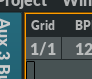

  <UL>
    <LI> Use mouse wheel to quicly change value.
  </UL>

  In order to curumvent the grid, press CTRL while doing mouse operations in the editor.
  `;

g_pages.push(
    {text : editor_grid_text,
     name : "grid",
     menu : "editor",
     display : "Grid"
    }
);


const editor_bpmtext_text = `
  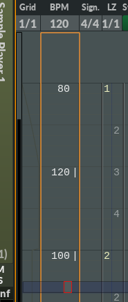

    <h2>BPM track</h2>
    
  The BPM track lets you override the default tempo for a block.
  
  <p>
    
    To enable the BPM track, right-click somewhere in the timing area of the editor (to the left of the note tracks), and enable "BPM".
    
<p>
  <blockquote>
  <pre>
 BPM format: <b>xxxt</b>, where
    
 <b>xxx</b>  = BPM. <b>1</b> = lowest BPM, <b>999</b> = highest BPM.
    <b>t</b> = Whether to gradually change tempo between the current BPM and the next (denoted by '<b>|</b>').

 If <b>t</b> is '<b> </b>' (empty), the tempo will accelerate / deaccelerate to the next BPM.
 If <b>t</b> is '<b>|</b>', there is no accelerando / deaccelerando.

 Press <b>T</b> to switch between the two modes.
      
 Notes:
  * If <b>xxxt</b> has an 'm' prefix, it means that the line contains more than one BPM entry. The last BPM value is displayed.
  * If <b>xxxt</b> has a 'd' prefix, it means that the BPM entry starts below the start of the line.
  </pre>  

  </blockquote>

<p>

  Tips:
<UL>
  <LI> To remove a BPM entry, press DEL.
  <LI> To adjust accelerando and deaccelerando behavior (relevant when <b>t</b> is empty), go to File -> Song properties.
</UL>

  <h2>Default BPM</h2>

  The BPM text entry lets you set the default tempo.
  The text entry is either placed in the upper left corner of the editor or in the bottom bar, depending on whether the BPM track is visible or not.
  <br>

  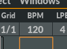
  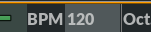


  <p>


  `;

g_pages.push(
    {text : editor_bpmtext_text,
     name : "bpmtext",
     menu : "editor",
     display : "BPM"
    }
);


const editor_lpbtext_text = `
  <h2>LPB</h2>


  LPB stands for <b>L</b>ines <b>P</b>er <b>B</b>eat, and is used to specify how many tracker lines to play in one beat.
<p>
  In trackers, this value is often important since it sets the edit-resolution. But in Radium, it's more convenient to change the <A href="index.html?page=lztrack">LZ value</a> instead.
<p>
  LPB would in most situations be set to 4, and not changed afterwards.
  

  <p>

  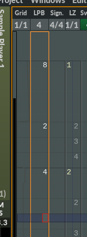

    <h2>LPB track</h2>
    
  The LPB track lets you override the default LPB for a block.
  
  <p>
    
    To enable the LPB track, right-click somewhere in the timing area of the editor (to the left of the note tracks), and enable "LPB".
    
<p>
  <blockquote>
    <pre>
      
 LPB format: <b>xx</b>, where xx goes between 1 and 99.
      
 Notes:
  * If <b>xx</b> has an 'm' prefix, it means that the line contains more than one LPB entry. The last LPB value is displayed.
  * If <b>xx</b> has a 'd' prefix, it means that the LPB entry starts below the start of the line.
      
  </pre>  

  </blockquote>

<p>

  Tips:
<UL>
  <LI> To remove an LPB entry, press DEL.
</UL>

    <h2>Default LPB</h2>

  The LPB text entry lets you set default LPB.
  The text entry is either placed in the upper left corner of the editor or in the bottom bar, depending on whether the LPB track is visible or not.<br>

  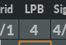
  


  <p>

  `;

g_pages.push(
    {text : editor_lpbtext_text,
     name : "lpbtext",
     menu : "editor",
     display : "LPB"
    }
);


const editor_signaturetext_text = `
  <h2>Signatures</h2>
  
  Signatures specify rhythm. It does so by specifying number of beats (in a bar) above beat type. For instance, a 4/4 signature means that there are 4 beats in the bar, and that each beat is a quarter.
  <p>
   Rhytm is used by external plugins, the metronome, modulators, and jack transport.
  <p>
    Here are some other common names for the term "signature": time signature, meter signature, meter, metre, measure, and measure signature. 
  <p>
  Example 1: If tempo is set to 64 BPM, and the signature is set to 8/8, a new bar will be played every 16 seconds (64/4 * 8/8), and a new beat will be played every 2 seconds (64/4 * 1/8). Example 2: If the signature is set to 2/4, a new bar will be played every 8 seconds (64/4 * 2/4), and a new beat will be played every 4 seconds (64/4 * 1/4).
  

  <p>

  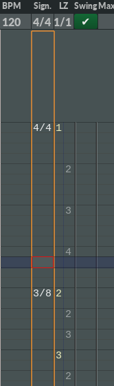

    <h2>Signature track</h2>
    
  The Signature track lets you override the default Signature for a block.
  
  <p>
    
    To show the Signature track, right-click somewhere in the timing area of the editor (to the left of the note tracks), and enable "Signature".
    
<p>
  <blockquote>
    <pre>
      
 Signature format: <b>u/l</b>. (<b>u</b> = upper numeral, <b>l</b> = lower numeral)
  </pre>  

  </blockquote>

<p>

<UL>
  <LI> Press Return to create a new Signature entry or to edit an existing Signautre entry.
  <LI> Press DEL to remove a Signature entry.
</UL>

  <h2>Default Signature</h2>

  The Signature text entry lets you set the default Signature. The Signature text entry is either placed in the upper left corner of the editor, or in the bottom bar:<br>

  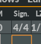
  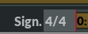
  <br>
  This entry is shown in the bottom bar if the signature track is hidden in the editor.
  


  `;

g_pages.push(
    {text : editor_signaturetext_text,
     name : "signaturetext",
     menu : "editor",
     display : "Signatures"
    }
);


const editor_lztrack_text = `
  <h2>Line Zoom (LZ)</h2>

  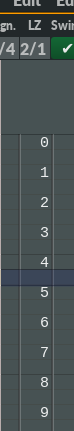

  LZ changes editing granularity. It is a dynamic way to change LPB without changing LPB itself. Changing LZ is non-destructive and does not change any musical data.

  <UL>
    <LI> Press Shift + Up to zoom in.
    <LI> Press Shift + Down to zoom out.
  </UL>
  

  Notice the relationship between the LZ value in the upper left corner, and the granularity of the editor:<br>
  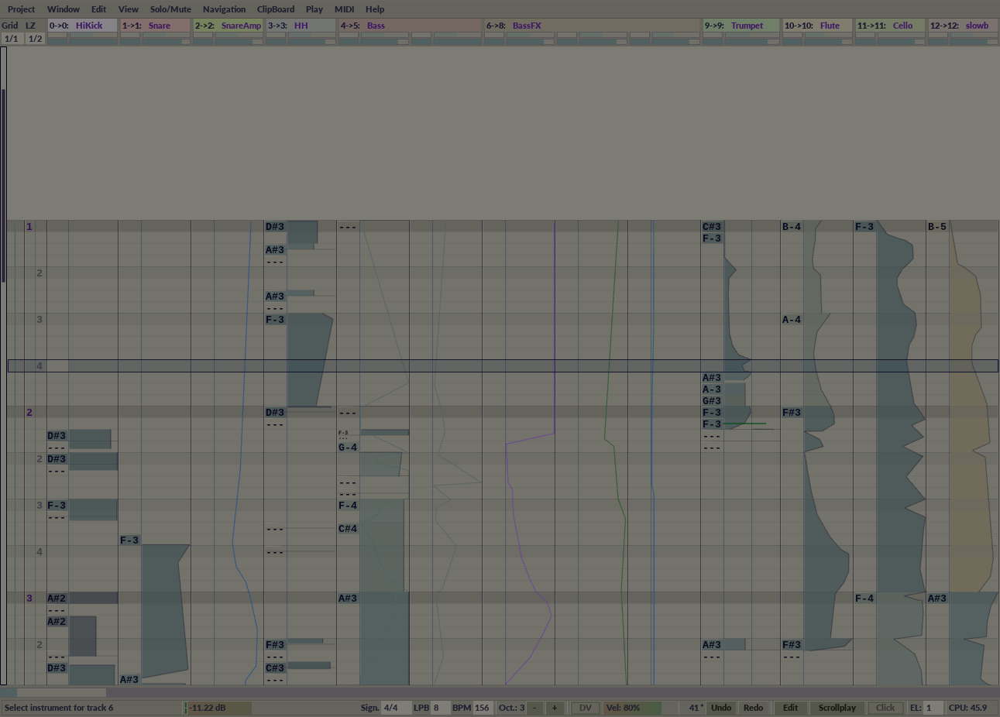
  `;

g_pages.push(
    {text : editor_lztrack_text,
     name : "lztrack",
     menu : "editor",
     display : "LZ"
    }
);


const editor_swingtext_text = `
  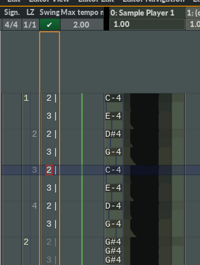

  <h2>Swing</h2>

  The Swing tracks provide efficient ways to create swing.
<p>
    
  There are two types of swing tracks in the editor:
<OL>
  <LI>The global swing track.<br>
    <UL>
      <LI><b>Where:</b> To the right of the "LZ" track. (See first picture.)
      <LI><b>Task:</b> Apply swing to all tracks in a block.
    </UL>
  <LI>Swing subtracks.
    <UL>
      <LI><b>Where:</b> To the left of note text. (See second picture.)
      <LI><b>Task:</b> Apply swing to individual tracks, overriding the global swing track for that track.
      <LI><b>How to enable:</b> Right-click inside a track and enable "Swing text".
    </UL>
</OL>

<p>
  <blockquote>
  <pre>
Swing text entry format: <b>xxt</b>, where
    
<b>xx</b>  = Swing weight. <b>1</b> = lowest weight, <b>99</b> = highest weight.
<b>  t</b> = Whether to gradually change tempo between the current and the next swing weight.

If <b>t</b> is "<b> </b>" (empty), the change happens gradually.
If <b>t</b> is "<b>|</b>", the change happens immediately.

Press <b>T</b> to switch between the two modes.
  </pre>  

  </blockquote>

<p>
  <br>

  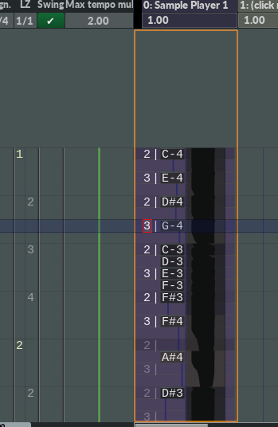
  
  Example of a shuffle swing:<br>
  <blockquote>
    <pre>
 3|
---
 2|
---
 3|
---
 2|
---
 3|
---
 2|
---
 3|
---
 2|
---
</pre>
</blockquote>

<p>

  Tips:
  
<UL>
  <LI> Press DEL to remove a swing entry.
  <LI> To stop swing in the middle of a block, add "1" (or any number) to the first beat in a bar, and remove all other swing values from that bar.
  <LI> To disable all swing in a block (can be used to quickly compare swing vs. non-swing), unselect the check box below "Swing" in the upper left part of the editor.
  <LI> To adjust accelerando and deaccelerando behavior (relevant when <b>t</b> is empty), go to File -> Song properties.
  <LI> To change whether to let the editor graphics swing along while playing, go to File -> Song properties.
  <LI> To change whether to apply global swing to the tempo sent to plugins and JACK transport, go to File -> Song properties.
</UL>

<p>

  Swing options in File -> Song properties:</br>
  
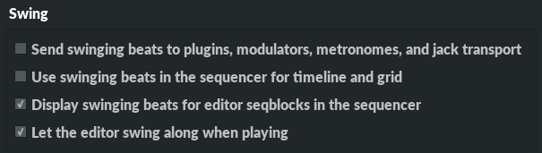<br>
  `;

g_pages.push(
    {text : editor_swingtext_text,
     name : "swingtext",
     menu : "editor",
     display : "Swing"
    }
);


const editor_tempoautomationtrack_text = `
  <h2>Tempo automation track</h2>

  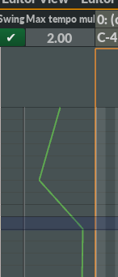

  Time-varying tempochanges (accelerando/ritardando) can be defined using break point lines in the special tempo automation track.

  <p>
   
  Tips:
<UL>
  <LI> Press Left Alt + Return to add a node with the value 1.
  <LI> Press Backspace to delete a node.
  <LI> Press Left Alt + X to delete all nodes.
  <LI> Press Left Alt + C to copy all nodes.
  <LI> Press Left Alt + V to paste nodes.
  <LI> To adjust accelerando and deaccelerando behavior, go to File -> Song properties.
</UL>
  `;

g_pages.push(
    {text : editor_tempoautomationtrack_text,
     name : "tempoautomationtrack",
     menu : "editor",
     display : "Tempo automation"
    }
);


const editor_pianoroll_text = `
  <h2>Pianoroll</h2>

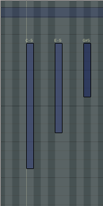

  <p>

    A pianoroll is a way to define notes by graphics.

<h3>How to</h3>

<UL>
  <LI><b>Show the pianoroll:</b>
    <OL>
      <LI><b>Move mouse pointer</b> inside the track you want to edit.
      <LI><b>Right-click</b> to open the popup menu.
      <LI><b>Click "Pianoroll"</b> to show the pianoroll.
    </OL>
    Alternatively, you can press <b>Left Alt + P</b> on the keyboard (press <b>Ctrl + F5</b> first to ensure the editor has keyboard focus).
  <LI><b>Create note:</b>
    <OL>
      <LI> <b>Move mouse pointer</b> where you want the note to start.
      <LI> <b>Press left mouse</b> button.
      <LI> <b>Move mouse pointer</b> where you want the note to end.
      <LI> <b>Release left mouse</b> button.
    </OL>
  <LI><b>Delete current note:</b>
    <OL>
      <LI> Move cursor above the note you want to delete.
      <LI> Hold shift and press right mouse button.
    </OL>
  <LI><b>Delete all selected notes:</b>
    <OL>
      <LI> Move cursor above a selected note.
      <LI> Select "Delete all selected notes".
    </OL>
  <LI><b>Move note:</b>
    <OL>
      <LI> Move cursor above the note you want to move.
      <LI> Press left mouse button.
      <LI> Move cursor.
      <LI> Release left mouse button.
    </OL>
</UL>

    
<h3>Selecting and deselecting notes</h3>

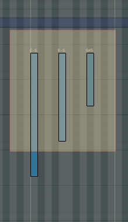<br>

<UL>
  <LI>To <b>select</b> or <b>deselect</b> a single note: Press <b>Ctrl + left mouse button</b>
  <LI>To <b>deselect all</b> notes: Click <b>left mouse button</b> anywhere inside the piano roll.
  <LI>To create a <b>selection rectangle</b>: Press <b>Ctrl</b> and mark a rectangle with <b>left mouse button</b>
  <LI>To <b>copy</b> selected notes: Press <b>Ctrl + C</b>
  <LI>To <b>cut</b> selected notes: Press <b>Ctrl + X</b>
  <LI>To <b>paste</b> selected notes: Press <b>Ctrl + V</b>
</UL>

Note that if the <b>mouse pointer is above a single note</b> while copying or cutting, and this note is <b>not</b> selected, this note will be copied/cut instead of the selected notes.


` + selection_vs_range_text + `

<h3>Rubber</h3>

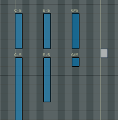
<br>
The Rubber deletes any playable part of a note that is under the mouse pointer. Press <b>right mouse button</b> and <b>drag</b> to show the rubber.


<h3>Finetuning and other mouse operations</h3>
See <A href="index.html?page=mouse">Mouse</a>


  <p>
    

  <p>
  `;

g_pages.push(
    {text : editor_pianoroll_text,
     name : "pianoroll",
     menu : "editor",
     display : "Pianoroll"
    }
);


const editor_notetext_text = `
  <h2>Note text</h2>

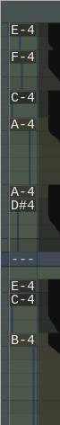


  <p>

    "Note text" is a way to define notes by text. "Note text" notes are placed in the "Note text" sub-track.
    <p>
    Examples:
    <UL>
      <LI> <b>C-3</b> defines the note <b>C</b> at octave <b>3</b>
      <LI> <b>F#4</b> defines the note <b>F sharp</b> at octave <b>4</b>
    </UL>

  <p>

    The "Note text" sub-track is visible by default. To hide or show the "Note text" sub-track:
    <OL>
      <LI><b>Move mouse pointer</b> inside the track you want to edit.
      <LI><b>Right-click</b> to open the popup menu.
      <LI><b>Toggle</b> the "Note text" entry.
    </OL>    


<h3>Create/Delete note</h3>

<UL>
  <LI><b>Create note</b>:
    <OL>
      <LI> Press <b>Ctrl + F5</b> to give keyboard focus to the editor.
      <LI> Press <b>Esc</b>, if necessary, to enable <b>Editing mode</b>. Editing mode is enabled when the cursor is <b style="color:blue">Blue</b>
      <LI> Press various keys on the keyboard to add notes:
        <UL>
          <LI><b>Z</b> is C, <b>S</b> is C#, <b>X</b> is D, and so forth.
          <LI>Press <b>F1</b> to select octave down.
          <LI>Press <b>F2</b> to select octave up.
        </UL>
        Note that locale setting is ignored when adding notes. Radium always uses a <A onclick="showHide('qwerty3')" href="#!">QWERTY</A> keyboard for note editing.
        <div id="qwerty3" style="display: none">
          
        </div>
      <LI> You can also add notes by sending MIDI. Configure MIDI input devices under <b>MIDI -> Midi Preferences -> Input ports</b>
    </OL>
  <LI><b>Delete note</b>:
    <OL>
      <LI> Move cursor above note.
      <LI> Press <b>Del</b>
    </OL>
</UL>

<h3>Insert/delete lines</h3>

<UL>
  <LI><b>Insert lines</b> in <b>current</b> track:
    <UL>
      <LI> Press <b>Backspace</b> to delete <b>1</b> line.
      <LI> Press <b>Left Alt + Backspace</b> to insert <b>1</b> line.
    </UL>
  <LI><b>Insert lines</b> in <b>all</b> tracks:
    <UL>
      <LI> Press <b>Shift + Return</b> to insert or delete <b>1</b> line.
      <LI> Press <b>Left Alt + Up</b> to delete <b>1</b> line.
      <LI> Press <b>Left Alt + Down</b> to insert <b>1</b> line.
    </UL>
</UL>

` + selection_vs_range_text + `

<h3>Range</h3>

<UL>
  <LI>To <b>create range</b>:
    <OL>
      <LI>Press <b>Left Win/Cmd + Z</b> to cancel current range, if necessary.
      <LI><b>Move cursor</b> to the upper left corner of the range you want to create.
      <LI>Press <b>Left Win/Cmd + B</b>
      <LI><b>Move cursor</b> to the lower right corner of the range you want to create.
      <LI>Press <b>Left Win/Cmd + B</b> again.
    </OL>
  <LI>To <b>copy range</b>: Press <b>Left Win/Cmd + C</b>
  <LI>To <b>cut range</b>: Press <b>Left Win/Cmd + X</b>
  <LI>To <b>paste range</b>: Press <b>Left Win/Cmd + V</b>
</UL>


    
<h3>Finetuning and other mouse operations</h3>
See <A href="index.html?page=mouse">Mouse</a>


  <p>
    

  <p>

  `;

g_pages.push(
    {text : editor_notetext_text,
     name : "notetext",
     menu : "editor",
     display : "Note text"
    }
);


/*******************************/
/*****  Editor -> Centtext *****/
/*******************************/
const centtext_text = `
  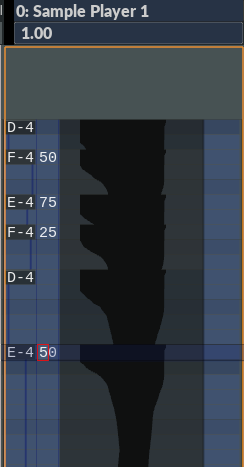
  
  <h2>Cent text</h2>
  
  Cent text lets you set the cent value of a semitone.
  <p>
    To enable Cent text, right-click inside a track and enable "Cent text".
    
  <p>
    <blockquote>
      <pre>
        
        Cent text format: <b>xx</b>, where xx goes between 1 and 99.
      </pre>
    </blockquote>
  <p>
    
    <UL>
      <LI>To remove a cent text (same as setting cent to 0), press <b>DEL</b>.
      <LI>Cents are <b>not</b> supported by:
        <UL>
          <LI>VST/VST3 instruments
          <LI>AU instruments
          <LI>LV2 instruments
          <LI>The FluidSynth instrument
          <LI>The MIDI instrument.
        </UL>
    </UL>
    `;


g_pages.push(
    {text : centtext_text,
     name : "centtext",
     menu : "editor",
     display : "Cent text"
    }
);


const editor_chancetext_text = `
    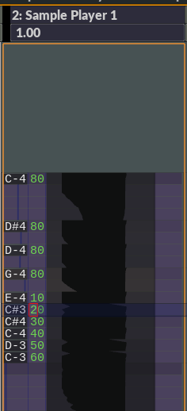
    
<h2>Chance text</h2>

Chance text lets you set the probability for this note or pitch to play.
<p>
To enable Chance text, right-click inside a track and enable "Chance text".

<p>
  <blockquote>
    <pre>
Chance text format: <b>xx</b>, where 

 <b>0</b> = Only play if the previous note played. For instance if you want to play a chord with same chance.
 <b>1</b> = 0.004% chance.
..
<b>40</b> = 25% chance.
.. 
<b>80</b> = 50% chance.
..
<b>c0</b> = 75% chance.
..
<b>ff</b> = 99.6% chance.
<b>  </b> = 100% chance. (empty)
    </pre>
  </blockquote>
<p>

  <UL>
    <LI>To remove a chance text (to make sure the note is always played), press <b>DEL</b>.
    <LI>To control the chance of individual voices in the note duplicator,
      you can automate the instrument effects <b>System Chance 1</b>, <b>System Chance 2</b>, and so forth, instead.
      (Note that the value <b>ff</b> is interpreted as 256 when automating the chance
      of individual voices in the note duplicator so you don't have to worry about
      the voices not always playing.)
  </UL>
  `;

g_pages.push(
    {text : editor_chancetext_text,
     name : "chancetext",
     menu : "editor",
     display : "Chance text"
    }
);


/*******************************/
/*****  Editor -> Veltext  *****/
/*******************************/
const veltext_text = `
    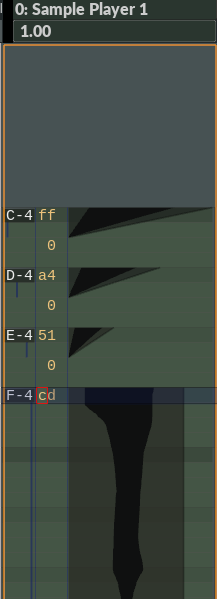
    
    <div id="dasfusetest"></div>
    
    <h2>Velocity text</h2>
    
    Velocity text is an alternative way to edit the velocities of a note.
    Editing text is often quicker than editing velocities graphically.
    
    <p>
      
      To enable Velocity text, right-click inside a track and enable "Velocity text".
      
    <p>
      <blockquote>
        <pre>
          Velocity text format: <b>xxt</b>, where
          
          <b>xx</b>  = Velocity value. <b>0</b> = lowest velocity, <b>ff</b> = highest velocity. (hex format)
          <b>t</b> = Whether to glide to the next velocity or not (denoted by '<b>|</b>').
    </pre>
      </blockquote>
    <p>
      
      Tips:
      <UL>
        <LI>Press 'G' to quickly add an <b>ff</b> node.
        <LI>Press 'T' to switch glide mode (i.e. add or remove the <b>|</b> character).
        <LI>Press 'Left Alt + Y' to turn on/off velocity text for the current track.
        <LI>Press 'Left Ctrl + Y' to turn on/off velocity text for all tracks in block.
      </UL>
   `;


g_pages.push(
    {text : veltext_text,
     name : "veltext",
     menu : "editor",
     display : "Velocity text"
    }
);


const editor_fxtext_text = `
    
    
<h2>FX text</h2>

FX text is an alternative way to edit instrument automation in the editor.
Editing text is often quicker than editing effects graphically.

<p>

To enable FX text, right-click inside a track and enable "FX text".
  
<p>
  <blockquote>
    <pre>
FX text format: <b>xxt</b>, where
      
<b>xx</b>  = effect value. <b>0</b> = lowest value, <b>ff</b> = highest value. (hex format)
  <b>t</b> = Whether to glide to the next effect or not (denoted by '<b>|</b>').
    </pre>
  </blockquote>

<p>

  Tips:
  <UL>
    <LI>Press 'G' to quickly add an <b>ff</b> node.
    <LI>Press 'T' to switch glide mode (i.e. add or remove the <b>|</b> character).
    <LI>Press 'Left Alt + X' to cut current fx track.
    <LI>Press 'Left Alt + C' to copy current fx track.
    <LI>Press 'Left Alt + V' to paste into current fx track.
    <LI>Press 'Left Alt + Q' to quantitize fx values in the track. (Adjust <A href="index.html?page=lztrack_editor">LZ</A> to change quantization resolution).
  </UL>

<p>
  
  <blockquote>
    <pre>
<u>A special situation</u>

Let's say you have an fx with two nodes. The first node has the value '<b>6e|</b>',
and the second node has the value '<b>28 </b>'.

<b>Q</b>: Will the value 28 be sent to the instrument?
<b>A</b>: Yes.
</bre>
</blockquote>
  `;

g_pages.push(
    {text : editor_fxtext_text,
     name : "fxtext",
     menu : "editor",
     display : "FX text"
    }
);


const editor_fxarea_text = `

<h2>FX automation and Velocity automation</h2>

Both FX automation and Velocity automation are placed in the same subtrack, which is also the rightmost subtrack in a track. The Velocity/FX subtrack can not be hidden.

<p>


<h3>FX automation</h3>

To add FX automation to a track:

<OL>
  <LI> If the track doesn't have an instrument assigned, left-click in the track header where it says <b>(click me)</b>, and then select an instrument. For instance <B>New Sample Player</b>.
  <LI> Move the mouse pointer inside the track itself (i.e. below the track header).
  <LI> <b>Right-click</b> and select <b>New FX</b> at the top of the popup menu.
  <LI> Select the FX you want to automate.
  <LI> A minimal automation with two nodes should now have been created.
</OL>

If you want to edit automation by keyboard instead of mouse, look at <A href="index.html?page=fxtext">FX text</A>.


<p>

  
<h3>Velocity automation</h3>

Velocity is the volume of a single note. Velocity automation can for instance be used to create crescendos and decresendos.
Velocity automation automatically appears for notes inside the fx/velocity subtrak.

<p>
  If you want to edit velocity automation by keyboard instead of mouse, look at <A href="index.html?page=veltext">Velocity text</A>.

  
  `;

g_pages.push(
    {text : editor_fxarea_text,
     name : "fxarea",
     menu : "editor",
     display : "FX automation and Velocity automation"
    }
);


/**************************************/
/*****  Mixer                    *****/
/************************************/

const mixer_text = `
    <p>
      
<a name="mixer"></a><h2>Common mixer features</h2>


<h3>Header buttons</h3>

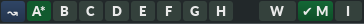
<br>


<table>
  <tr>
    <td>&#8669</td> <td>Reset A/B (actual: A/B/C/D/E/F/G/H).</td>
  </tr>
  <tr>
    <td><b>A - H</b></td><td> Select A/B.</td>
  </tr>
  <tr>
    <td><b>W</b> </td><td> Move mixer into it's own window. Tip: To make the mixer window independent of the main window, unset <nobr><i>"Mixer:&nbsp;Let&nbsp;Mixer&nbsp;window&nbsp;..."</i></nobr> under <i>Edit -> Preferences -> GUI</i>.</td>
  </tr>
  <tr>
    <td><b>M</b> </td><td> <b>Switch</b> between <b>modular mixer</b> and <b>mixer strips</b>.</td>
  </tr>
  <tr>
    <td><b>I</b> </td><td> Display the instrument widget in the bottom of the mixer.</td>
  </tr>
  <tr>
    <td><b>S</b> </td><td> Display the sequencer widget in the bottom of the mixer.</td>
  </tr>
  <tr>
</table>

Note that you can assign keybinding to all buttons by right-clicking.

<h3>General</h3>
<OL>
    
  <LI> Most functionality is accessed by using the popup menus. If you want to assign a keybinding to an entry in a popup menu, right-click the entry.
    
</OL>

`;

g_pages.push(
    {text : mixer_text,
     name : "mixer",
     menu : "mixer",
     display : "Mixer"
    }
);


const modular_mixer_text = `
    
<a name="modularmixer"></a><h2>Modular Mixer</h2>

    

<h3>Header buttons</h3>

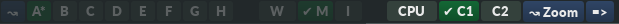<br>

<table>
  <tr>
    <td><b>CPU</b></td> <td> Display CPU usage instead of instrument name. The meaning of the three numbers:
      <OL>
        <LI>Minimum amount of CPU spent during the last second (percentage)
        <LI>Average amount of CPU spent during the last second (percentage).
        <LI>Maximum amount of CPU spent during the last second (percentage).
      </OL>
    </td>
  </tr>
  <tr>
    <td><b>C1</b></td> <td> If enabled, show normal connections.</td>
  </tr>
  <tr>
    <td><b>C2</b></td> <td> If enabled, show bus connections.</td>
  </tr>
  <tr>
    <td><b>&#8669Zoom</b></td> <td> Reset Zoom</td>
  </tr>
  <tr>
  <td><b>=&gt;</b></td> <td> Rotate mixer view.</td>
</table>


<h3>General</h3>
<UL>
<LI>Move objects with right mouse button.
  <LI>Delete objects or connections by shift-right-clicking.
  <LI>Move and connect object in one operation: Place one object on 
    top of another object.
  <LI>Zoom in and out by pressing CTRL and using the scroll wheel.    
</UL>


<h3>Mixer objects</h3>
<UL>
  <LI>Buttons:
    <UL>
      <LI> <font color="green">"M"</font>: Mute
      <LI> <font color="#aaaa00">"S"</font>: Solo
      <LI> <font color="orange">"B"</font>: Bypass
    </UL>
  <LI>Colors:
    <UL>
      <LI> <font color="blue">Blue border</font>: Current mixer object
      <LI> <font color="red">Red border</font>: Selected mixer object
      <LI> <font color="purple">Purple border</font>: Current mixer object, and selected.
      <LI> White text of instrument name: Current instrument
    </UL>
  <LI>Double-click the name of an object to open GUI.
</UL>

<h3>Selection</h3>
<UL>
  <LI>Ctrl-click to select/deselect an object.
  <LI>Create rectangle to select all objects inside the rectangle.
  <LI>Click outside an object to deselect all objects.
</UL>

<h3>Connections</h3>

<UL>
  <LI> Create an <b>audio connection</b> by dragging a line between the right side and left side of two objects.
  <LI> Create an <b>event connection</b> by dragging a line between the name of two instruments.
  <LI> Delete a connection by shift-right-clicking.
</UL>
<br>
<br>
<br>
<br>
<br>
<br>
<br>
<br>
<br>
<br>
<br>
`;

g_pages.push(
    {text : modular_mixer_text,
     name : "modular_mixer",
     menu : "mixer",
     display : "Modular mixer"
    }
);


const mixer_strips_text = `

<a name="mixerstrips"></a><h2>Mixer Strips</h2>

(Show mixer strips by unchecking the "M" checkbox in the header.)


  <h3>Header buttons</h3>
  
  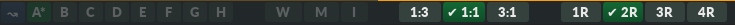<br>

  <table>
    <tr>
      <td><b>1:3<b></td> <td>Upper part of the mixer strips are shorter than the lower parts.</td>
    </tr>
    <tr>
      <td><b>1:1<b></td> <td>Upper parts and lower parts of the mixer strips have the same height.</td>
    </tr>
    <tr>
      <td><b>3:1<b></td> <td>Upper parts of the mixer strips are taller than the lower parts.</td>
    </tr>
    <tr>
      <td><b>1R</b></td> <td>Display 1 row of mixer strips.</td>
    </tr>
    <tr>
      <td><b>2R</b></td> <td>Display 2 rows of mixer strips.</td>
    </tr>
    <tr>
      <td><b>3R</b></td> <td>Display 3 rows of mixer strips.</td>
    </tr>
    <tr>
      <td><b>4R</b></td> <td>Display 4 rows of mixer strips.</td>
    </tr>
  </table>
<p>


<h3>Order</h3>
The order of the strips is not random or chronological. The sorting logic has four stages:
<OL>
  <LI> Sort by whether the strip is a bus or not. Non-buses are displayed first.
  <LI> Sort by vertical position in the modular mixer (top -> bottom).
  <LI> Sort by horizontal position in the modular mixer (left -> right).
  <LI> Slightly rearrange the strips order so that the audio flow always goes from left to right.
</OL>  

<p>


  <h3>Selection</h3>
<UL>
  <LI>Ctrl-click the instrument name to select/deselect a strip.
</UL>


<h3>How to...</h3>
Q: Set accurate volum by writing a number?<br>
A: Click the number box right above the volume slider
<p>
Q: Reset highest peak value in the box above the audio meter?<br>
A: Just click the box.
<p>
Q: Create a new mixer strip?<br>
A: You can&apos;t do that directly in a mixer strips window. You either have to create a new instrument in the modular mixer, add a new instrument to a track in the editor, or add a new audio seqtrack.
<p>
Q: Create a plugin or send?<br>
A: Use the popup menu
<p>
Q: Delete a plugin or send?<br>
A: Shift-right-click.
<p>
Q: Change between a wide and narrow strip?<br>
A: Double-click instrument-name.


<p>
Q: Delete a mixer strip?<br>
A: Right-click a mixer strip, and select "Delete". Or shift-right-click the name.


<br>
<br>
<br>
<br>
<br>
<br>
<br>
<br>
<br>
<br>
<br>
  `;

g_pages.push(
    {text : mixer_strips_text,
     name : "mixer_strips",
     menu : "mixer",
     display : "Mixer strips"
    }
);


const mixer_faq_text = `
    <h3>FAQ</h3>
    <UL>

      <LI><b>Q:</b> How do I set up a sidechain compression?<br>
        <b>A:</b> It&apos;s a little bit more cumbersome than other DAWs, but you only have to set it up once:<br>
	<small>(after setting it up you can save it as a preset)</small>
        <p>
        <OL>
          <LI> For this example we&apos;re going to use the included SC3 LADSPA plugin.<p>

              In the modular mixer, right-click and select "From plugin manager":<p>
              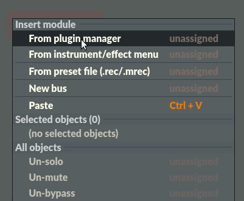
              <p>
              Then search for "sc3" and double-click the SC3 LADSPA plugin:<p>
              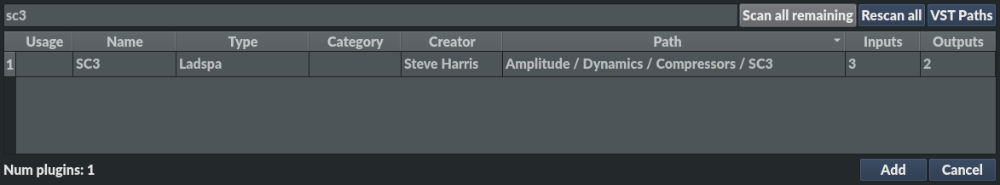
          <LI> Create two "Patchbay8" modules and connect both outputs to the SC3 LADSPA plugin:<p>
            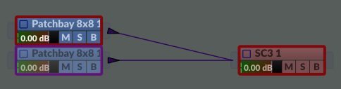
          <LI> For clarity, we name the first patchbay8 module "Sidechain", and the second patchbay8 module "Compressor":<p>
            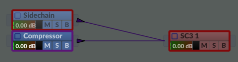
          <LI> Configure the two patchbay8 modules.<p>
            "Sidechain" looks like this:<p>
            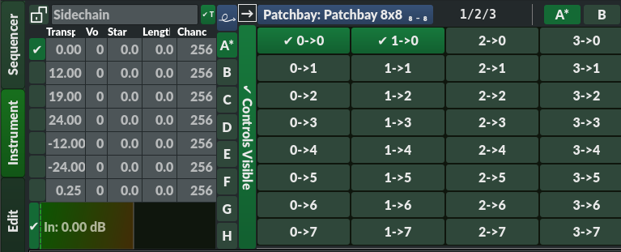<p>
            And "Compressor" looks like this:<p>
            
          <LI> Finished. To make this operation faster the next time, select all three modules, right-click, and select "Save multi-preset (.mrec)". Now you only have to select "From preset file (.rec/.mrec)" to create a new sidechain compressor.
        </OL>
        <p>
          
      <LI><b>Q:</b> How do I set volume higher than 6dB?<br>
        <b>A:</b> In the mixer strips, left-click the volume-number positioned between the mute button and the volume slider:<p>
          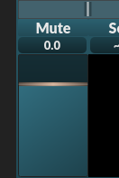
        <p>
          Then this dialog should pop up:<p>
          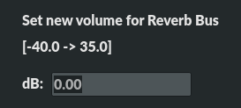        
    </UL>
`;


g_pages.push(
    {text : mixer_faq_text,
     name : "mixer_faq",
     menu : "mixer",
     display : "FAQ"
    }
);

    


/**************************************/
/*****  Sequencer                *****/
/************************************/

const sequencer_text = `
    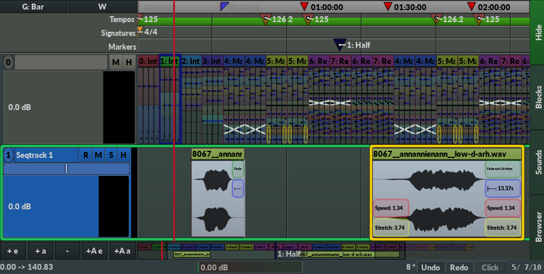
    
<h2>Sequencer</h2>

<h3>Time area</h3>

<UL>
  <LI> The sequencer lets you select when a block starts playing.
  <LI> Add a new sequencer track (seqtrack) by clicking one of the "+ ..." buttons in the lower left corner.
  <LI> Seqblocks:
    <UL> 
      <LI> Move a seqblock with the mouse.
      <LI> To move several seqblocks, either mark a rectangle, or press Ctrl and click on the seqblocks you want to move.
      <LI> To quickly copy a seqblock, hold the <b>Alt</b> key and drag a seqblock.
      <LI> Double-click a seqblock to open a GUI for it.
    </UL> 
  <LI> Use the popup menu to add effect automations, tempo automations, loop start and end positions, and other operations.
  <LI> For information about the different types of fade in and fade out shapes, look in the Ardour manual <A href="http://manual.ardour.org/editing-and-arranging/create-region-fades-and-crossfades/">here</A>.
  <LI> Drag seqtrack number to change track order.
  <LI> Insert several audio files into their own separate seqtracks by right-clicking inside an audio seqtrack and select "<b>Insert audio file(s)</b>".
</UL>

<h3>Timeline</h3>

<UL>
  <LI> Left-click the <b>Grid: Bar</b> button to enable/disable grid. (snap-to-grid behavior)
  <LI> Right-click the <b>Grid: Bar</b> button to set grid type.
  <LI> Double-click a marker to loop between that marker and the next marker. (If you double-click the last marker, you will be asked to rename that marker instead)
</UL>

<h3>Recording</h3>
<UL>
  <LI> To record audio, click the "R" button in the seqtrack header of audio seqtracks, and start playing. To configure number of audio channels and where to get audio from, right-click the "R" button. You might also want to select beforehand when to start and stop recording, and you can do this by by right-clicking in the seqblock area and select the "Punch in/out" option under "Sequencer timeline".
  <LI> Right-click the "R" button in a seqtrack header to set recording options.
</UL>


<h3>Tips</h3>
<UL>
  <LI> The quickest way to <b>start and stop playing</b> is to use the <b>mouse scroll wheel</b>. Scroll up to play, scroll down to stop.
  <LI> The quickest way to <b>scroll the seqtracks up or down</b> is to hold <b>shift</b> and use the <b>mouse scroll wheel</b>. You can also use the mouse scroll wheel inside the track headers, without having to press shift.
</UL>
  `;

g_pages.push(
    {text : sequencer_text,
     name : "sequencer",
     menu : "sequencer",
     display : "Sequencer"
    }
);


/**************************************/
/*****  Instrument               *****/
/************************************/
const instrument_text = `
      <h2>Instrument widget</h2>

      <UL>
        <LI>The instrument widget <font color="red">contains</font> several elements to control the sound. See tool tips for more information.
        <LI>The term "Instrument" is used for all types of sound objects, for instance plugins, MIDI event manipulators, and sound buses.
        <LI>The instrument widget is either positioned in:
          <UL>
            <LI>The lower tabs in the main window
            <LI>The lower area of the mixer window
          </UL>
          Click the "I" button in the mixer to switch between these two positions.
        <LI>By right-clicking a slider or checkbox, you can learn MIDI, assign an LFO, add automation, record into the editor, etc.
        <LI>Enable <b>Sample Seek</b> or <b>MIDI chase</b> for an instrument by pressing the <b>"S"</b> button in the instrument header. Sample seek is only supported by the Sampler instrument. All other instruments will resort to MIDI chase when this option is enabled.
        <LI> Some common instruments:
          <UL>
            <LI> <a onclick="showHide('sampler')" href="#!">Sample Player</a>
              <div id="sampler" style="display: none">
                The sample player plays audio files.
		<UL>
		  <LI>The Sample Player can load XI intruments; Soundfonts, and all types of sample formats supported by libsndfile.
		  <LI>WAV files are looped if they have loops defined in the "sampl" chunk, or they have "Loop Start" and "Loop End" cue id&apos;s.
		  <LI>SoundFonts (.sf2 files) often sound better when played with the FluidSynth instrument instead of the Sample Player. However, the Sample Player uses less memory, are faster to create, has sample-accurate note scheduling, supports pitch changes and polyphonic aftertouch (velocity can be changed while a note is playing), and has configurable options such as attack, decay, sustain, and release.
		  <LI>There is currently no graphical sample editor to edit samples, a feature which traditionally are provided by trackers. This feature should be provided later though. Until then, external sample editors must be used instead, if needed.
		  <LI>To record audio, either from outside the program or inside the program, click the red <font color="red">Record</font> button in the instrument widget header. A new audio file will be created automatically when recording. Recording will start when the new instrument receives a note, and it will stop recording when that note stops playing.
		</UL>
              </div>
            <LI> <a onclick="showHide('faustdev')" href="#!">FaustDev</a>
              <div id="faustdev" style="display: none">
                The Faust instrument lets you program <A href="http://faust.grame.fr">Faust</A> instruments in Radium. Also note that there is no "compile" button since programs are compiled in realtime while you write code.
              </div>
            <LI> <a onclick="showHide('puredata')" href="#!">Pure Data</a>
              <div id="puredata" style="display: none">
                The Pure Data instrument lets you program <A href="http://puredata.info">Pure Data</A> instruments in Radium. Currently, this instrument is only available on Linux.
              </div>
          </UL>
      </UL>
`;

g_pages.push(
    {text : instrument_text,
     name : "instrument",
     menu : "instrument",
     display : "Instrument"
    }
);


/**************************************/
/*****  Instruments -> faustdev  *****/
/************************************/
const faustdev_text = `
<h2>Faust Dev instrument</h2>
(under construction)
`;

g_pages.push(
    {text : faustdev_text,
     name : "faustdev",
     menu : "instrument",
     display : "FaustDev"
    }
);


const instrument_puredata_text = `
<h2>Pure Data</h2>

(under construction)
  `;

g_pages.push(
    {text : instrument_puredata_text,
     name : "puredata",
     menu : "instrument",
     display : "Pure Data"
    }
);


const instrument_sampler_text = `
<h2>Sample player</h2>

The sample player plays audio files.
<UL>
  <LI>The Sample Player can load XI intruments; Soundfonts, and all types of sample formats supported by libsndfile.
  <LI>WAV files are looped if they have loops defined in the "sampl" chunk, or they have "Loop Start" and "Loop End" cue id&apos;s.
  <LI>SoundFonts (.sf2 files) often sound better when played with the FluidSynth instrument instead of the Sample Player. However, the Sample Player uses less memory, are faster to create, has sample-accurate note scheduling, supports pitch changes and polyphonic aftertouch (velocity can be changed while a note is playing), and has configurable options such as attack, decay, sustain, and release.
  <LI>There is currently no graphical sample editor to edit samples, a feature which traditionally are provided by trackers. This feature should be provided later though. Until then, external sample editors must be used instead, if needed.
  <LI>To record audio, either from outside the program or inside the program, click the red <font color="red">Record</font> button in the instrument widget header. A new audio file will be created automatically when recording. Recording will start when the new instrument receives a note, and it will stop recording when that note stops playing.
</UL>
  `;

g_pages.push(
    {text : instrument_sampler_text,
     name : "sampler",
     menu : "instrument",
     display : "Sample player"
    }
);


const instrument_effect_popup_menu_text = `
<h2>Instrument effect popup menu</h2>

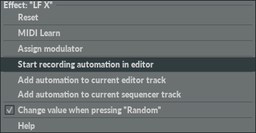

<hr>
<a href="#reset">Reset</a><br>
<hr>
<a href="#midilearn">MIDI Learn</a><br>
<hr>
<a href="#assignmodulator">Assign Modulator</a><br>
<hr>
<a href="#record">Start recording automation in editor</a><br>
<hr>
<a href="#addautomationtocurrenteditortrack">Add automation to current editor track</a><br>
<a href="#addautomationtocurrentsequencertrack">Add automation to current sequencer track</a><br>
<hr>
<a href="#changevaluewhenpressingrandom">Change value when pressing "Random"</a><br>

<p>
<p>
<p>
<p>
  

<a name="reset"></a><h3>Reset</h3>

Sets value back to the initial value provided by the instrument.


<p>

<a name="midilearn"></a><h3>MIDI Learn</h3>

After selecting this option, immediately turn a knob on your MIDI device. The knob should now control this effect.

<p>
  
  To remove the MIDI controller, right-click again, and select "Remove MIDI learn" from the popup menu.
  To assign a different MIDI controller, right-click again, and select "MIDI relearn".

<p>

  Visit "MIDI" -> "MIDI Learn Configuration" in the main menus to configure all "MIDI Learn"-ed controllers:<br>
<p>
  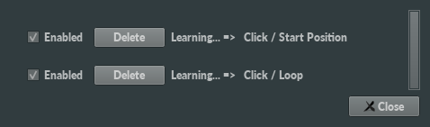

<p>
  
If it didn&apos;t work to assign a MIDI controller to this effect, make sure your MIDI device is added
under "Input ports" in the "MIDI" tab in the preferences window:<br>
<p>
  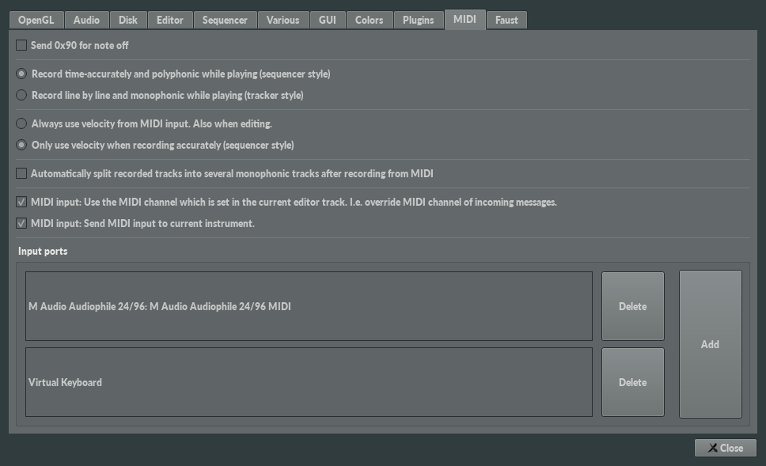


<a name="assignmodulator"></a><h3>Assign Modulator</h3>

A modulator constantly changes the value of the effect, usually in a cyclic manner. You change shape and frequency in the instrument widget of the modulator:
<p>
  
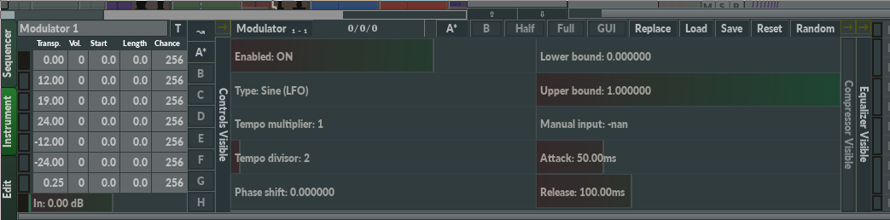

<p>
  Modulators are often used to create vibrato, tremolo, and so forth.
<p>
  

<a name="record"></a><h3>Start recording automation in editor</h3>

Lets you record automation:
<OL>
  <LI> Move the editor cursor to the track you want the automation to appear in
  <LI> Select "Start recording automation in editor"
  <LI> Play block (Press right shift)
  <LI> While playing, move the slider, or a MIDI controller that has <a href="#midilearn">learned</a> to control this slider.
  <LI> Stop playing.
  <LI> The recorded automation should now be placed in the current track.    
  <LI> To quantitize the newly recorded automation:
  <OL type="a">
    <LI> Show <a href="index.html?page=fxtext">FX text</a> for the editor track
    <LI> Move cursor to the FX text subtrack of the FX you want to quantitize.
    <LI> Adjust <A href="index.html?page=lztrack">LZ</A> to the wanted resolution.
    <LI> Press <b>Left alt + Q</b>
  </OL>
</OL>

If you don't want the automation, press <b>Ctrl + Z</b> to undo. (Alternatively cut it out by presssing <b>Left Alt + X</b> while the cursor is positioned in the FX text subtrack.)

  

<a name="addautomationtocurrenteditortrack"></a><h3>Add automation to current editor track</h3>

Convenient function to create a minimal automation for this effect at the current line in the current track in the editor.
<p>
  Selecting this option is much faster than manually creating the automation in the editor.

<p>


  
<a name="addautomationtocurrentsequencertrack"></A><h3>Add automation to current sequencer track</h3>

Convenient function to create a minimal automation for this effect at the current position in the current seqtrack in the sequencer.

<p>

  Selecting this option is much faster than manually creating the automation in the sequencer.

<p>


<a name="changevaluewhenpressingrandom"></A><h3>Change value when pressing "Random"</h3>

In the Instrument widget, there is a "Random" button in the upper right part:

<p>

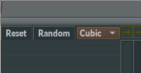

<p>

  Pressing this button will cause random values to be assigned to all effects that have been set to change value when pressing "Random".
  `;

g_pages.push(
    {text : instrument_effect_popup_menu_text,
     name : "effect_popup_menu",
     menu : "instrument",
     display : "Instrument effect popup menu"
    }
);


/**************************************/
/*****  Timing                *****/
/************************************/

const timing_text = `
<h2>Timing</h2>

<a href="#what">What is timing?</a><br>
<a href="#usage">What is timing used for in Radium?</a><br>
<a href="#overview">How is timing controlled?</a><br>
<a href="#modes">Timing modes</a><br>
<a href="#defaulttimingvalues">Default Timing values</a><br>


<a name="what"></a><h3>What is timing?</h3>

Timing is tempo and rhythm.

<p>

<a name="usage"></a><h3>What is timing used for in Radium?</h3>

<OL>
  <LI> <b>External plugins</b>
    (For instance to a make a VST plugin play echo sounds in sync with the music.)
    <p>
      
      
    <p>
      <LI> <b>The metronome</b> (Enabled by the "Click" button in the bottom bar)
        <p>
          
        <p>
      <LI> <b>Modulators</b>
        <p>
                    
        <p>
      <LI> <b>The sequencer grid</b>
        <p>
                    
       <LI> <b>Jack Transport</b>
         <p>
           
         <p>
           If the "Radium is the Jack Time Master" option is enabled under Edit -> Preferences -> Sequencer -> Jack Transport, Radium will send timing information to Jack Transport, meaning that other Jack Transport clients may use Radium&apos;s timing.<p>
           Note that Radium always uses it&apos;s own timing. Radium never asks Jack Transport for timing.
</OL>
<pre>
</pre>
<p>


<a name="overview"></a><h3>How is timing controlled?</h3>

Timing is controlled by tempo events and signature events:
<UL>
<LI> <b>Tempos</b> (BPM) specify the duration of a quarter note. Note that BPM stands for <b>B</b>eats <b>P</b>er <b>M</b>inute, which is a misleading name unless your signature is 4/4. <b>QPM</b> (Quarter notes Per Minute) would be more correct.
<p>
<LI> <b>Signatures</b> specify rhythm. It does so by specifying number of beats (in a bar) above beat type.
  For instance, a 4/4 signature means that there are 4 beats in the bar, and that each beat is a quarter.
  <p>
    Here are some other common names for the term "signature": time signature, meter signature, meter, metre, measure, and measure signature.
</UL>
<p>
Example 1: If tempo is set to 64 BPM, and the signature is set to 8/8, a new bar will be played every 16 seconds (64/4 * 8/8), and a new beat will be played every 2 seconds (64/4 * 1/8).
Example 2: If the signature is set to 2/4, a new bar will be played every 8 seconds (64/4 * 2/4), and a new beat will be played every 4 seconds (64/4 * 1/4).
<pre>
</pre>
<p>


<a name="modes"></a><h3>Timing modes</h3>

There are two timing modes to select from. Only one of them can be enabled at the same time:

<OL>
<LI><b>Editor timing</b><br>
<p>
Editor timing is the default mode. In editor timing mode, tempos and signaturs are provided by the editor blocks placed in the <b>first seqtrack</b>.
<p>
Tempos are edited in the tempo tracks in the editor ("BPM"), and signatures are edited in the signature tracks in the editor ("Sign."):
<p>
  
<p> 
In this mode, the tempo and signature lanes in the sequencer are just used for visualization, and editing in any of these two lanes is disabled.
<p>
 
<LI><b>Sequencer timing</b><br>
<p>
In sequencer timing mode, tempos and signatures are provided by the tempo and signature lanes in the sequencer.
This mode can be set explicitly in the popup menu of the sequencer,
but it will also be used automatically if the first seqtrack is for audio and not for editor blocks
<p>
If you are using Radium mainly for recording and playing back audio files,
this mode is both simpler, and probably easier to use, than editor timing.
<p>
Note that accelerando and ritardando are not supported yet in this mode.
In addition, signatures must align with bars, and tempos must align with beats.
Editor timing mode does not have these limitations.
<p>
  
</OL>

To select timing mode, use the popup menu in the sequencer and either select "Editor timing" or "Sequencer timing".
Note that if the first seqtrack is for audio files, you are always forced to use sequencer timing.

<a name="defaulttimingvalues"></a><h3>Default Timing values</h3>
<p>
  If "BPM track" and "Signature track" are visible you can change the default timing values in the upper left part of the editor:
<p>
  
<p>
  If "BPM track" and "Signature track" are not visible you can change the default timing values in the bottom bar instead:
<p>
  

<p>

  You change whether "BPM track" and "Signature track" are visible by right-clicking.
  `;

g_pages.push(
    {text : timing_text,
     name : "timing",
     menu : "timing",
     display : "Timing"
    }
);


/**************************************/
/*****  Modulators                *****/
/************************************/

const modulators_text = `
<h2>Modulators (LFO, etc.)</h2>
 
Any effect parameter, both Audio and MIDI, can be controlled by a modulator.

<p>
  
A modulator constantly changes the value of the effect, usually in a cyclic manner (LFO). You change shape and frequency in the instrument widget of the modulator:

  `;

g_pages.push(
    {text : modulators_text,
     name : "modulators",
     menu : "modulators",
     display : "Modulators"
    }
);


/**************************************/
/*****  Scripting                *****/
/************************************/

const scripting_text = `
<h2>Scripting</h2>

Radium supports scripting with <A href="https://ccrma.stanford.edu/software/snd/snd/s7.html">S7 Scheme</A> and Python 2.


<UL>
  <LI> List of functions: <A href="https://raw.githubusercontent.com/kmatheussen/radium/master/api/protos.conf">protos.conf</A>.
  <LI> Python is less supported than scheme. Functions taking a <i>dynvec_t</i>, <i>dyn_t</i> or <i>func_t</i> argument are not available from python, and functions returning any of those types will return <i>None</i> in Python.
</UL>

  
To bind Scheme code or Python code to a key, see <A href="index.html?page=editing_keybindings">Editing keybindings</A>.
    `;

g_pages.push(
    {text : scripting_text,
     name : "scripting",
     menu : "scripting",
     display : "Scripting"
    }
);


/**************************************/
/*****  Not found                *****/
/************************************/

const notfound_text = `
<h2>Page not found</h2>
    `;

g_pages.push(
    {text : notfound_text,
     name : "notfound",
     menu : "gui",
     display : "Not found"
    }
);


// https://stackoverflow.com/questions/2090551/parse-query-string-in-javascript
// (QWebView::URL doesn't have getSearchParam())
function getQueryVariable(variable) {
    var query = window.location.search.substring(1);
    var vars = query.split('&');
    for (var i = 0; i < vars.length; i++) {
        var pair = vars[i].split('=');
        if (decodeURIComponent(pair[0]) == variable) {
            return decodeURIComponent(pair[1]);
        }
    }
    console.log('Query variable %s not found', variable);
    return "gui";
}

var g_page_name;
var g_menu_name = "";

function set_default_page_name() {
    g_page_name = window.location.search=="" ? "gui" : getQueryVariable("page");

    var gotit = false;
    
    const page_names = new Set();
    var not_found_page;
    
    g_pages.forEach(function (page, index) {
        if (page_names.has(page.name))
            throw new Error("ERROR")

        if (page.name=="notfound")
            not_found_page = page;
        
        page_names.add(page.name);

        //throw new Error("ERROR2")
        
        if (page.name==g_page_name){
            set_page(page);
            gotit = true;
            //return; // Want to assert that there are no more than one page with the same name.
        }
    });

    if (!gotit) {
        g_page_name = "notfound";
        set_page(not_found_page);
    }
}

function generate_main_menu() {
    var html = "<ul>";
    var curr_menu = "";
    var has_submenu = false;

    for(var i = 0 ; i < g_pages.length-1 ; i++) {
        const page = g_pages[i];
        
        if (curr_menu != page.menu) {

            if (has_submenu){
                html += "</ul>";
                has_submenu = false;
            }

            if (curr_menu != "")
                html += "</li>\n";
            
            curr_menu = page.menu;

            isactive = g_page_name==curr_menu ? "active" : "maybeactive";
            html += '<li><a class="' + isactive + '" id="' + page.name + 'link" href="index.html?page=' + page.menu + '">' + page.display + '</a>'
            
        } else {

            if (true || g_menu_name == curr_menu) {
                
                const ishidden = g_menu_name == curr_menu ? "" : " hidden";
                
                if (has_submenu==false) {
                    html += '<ul ' + ishidden + '>'; // id="' + page.menu + 'menu>';
                    has_submenu = true;
                }
                
                const isactive = g_page_name==page.name ? "active" : "maybeactive";
                
                html += '<li' + ishidden + '><a class="' + isactive + '" id="' + page.name + 'link" href="index.html?page=' + page.name + '">' + page.display + '</a></li>';

            }
           
        }
    }

    if (has_submenu)
        html += "</ul>";
    html += "</li>";
    html += "</ul>";
    
    document.getElementById('main_menu').innerHTML = html;

    setup_menu_link_handlers();
}

function set_page(page) {
    // It's never the same menu since we always change the color of the current link.
    const is_same_menu = false; //g_menu_name==page.menu;
    
    g_page_name = page.name;
    g_menu_name = page.menu;
    //console.log("page: " + g_page_name + ". menu: " + g_menu_name);

    document.getElementById('main_title').innerHTML = "Radium manual: " + page.display;
    
    if (is_same_menu==false)
        generate_main_menu();

    document.getElementById('mainbody').innerHTML = page.text;
    
    //document.getElementById(page.name + 'link').className = "active";
    //document.getElementById(page.menu + 'menu').style.display = "";
}

function set_page_with_history(page) {
    set_page(page);
    history.pushState({}, "Radium: " + page.display, "index.html?page=" + page.name);
}

function setup_menu_link_handlers() {
    for(var i=0;i<g_pages.length-1;i++){
        const page = g_pages[i];
        //console.log(page.name);
        document.getElementById(page.name + 'link').onclick = function() {
            //console.log("hepp");
            set_page_with_history(page);
            return false;
        };
    }
}


function set_default_page() {
    var gotit = false;
    const page_names = new Set();

    g_pages.forEach(function (page, index) {
        if (page_names.has(page.name))
            throw new Error("ERROR")
        
        page_names.add(page.name);

        //throw new Error("ERROR2")
        
        if (page.name==g_page_name){
            set_page(page);
            gotit = true;
            //return; // Want to assert that there are no pages with the same name.            
        }
    });

    if (!gotit)
        set_page("gui");
}


set_default_page_name();
set_default_page();


// https://stackoverflow.com/questions/494143/creating-a-new-dom-element-from-an-html-string-using-built-in-dom-methods-or-pro
function htmlToElement(html) {
    var template = document.createElement('template');
    //html = html.trim(); // Never return a text node of whitespace as the result
    template.innerHTML = html;
    /*
    console.log(template);
    console.log(template.content);
    console.log("child nodes:");
    console.log(template.content.childNodes);
    */
    return template.content;//.firstChild;
}

function get_strings_from_html_old(html) {    
    var ret = [];
    function rec(element) {
        if (element.nodeType==3) {
            element.data.trim().split(/(\s+)/).forEach(function (str) {
                str = str.trim();
                if (str != "")
                    ret.push(str);
            });
            //const text = element.data.trim();
            //console.log(text);
            //if (text != "")
            //    ret += " " + text;
        } else {
            element.childNodes.forEach(function (item, index) {
                rec(item);
            });
        }
    }

    rec(htmlToElement(html));
    return ret;
}

const g_terminating_search_tags = new Set();
g_terminating_search_tags.add("P");
g_terminating_search_tags.add("LI");
//g_terminating_search_tags.add("BR");
g_terminating_search_tags.add("HR");
g_terminating_search_tags.add("H1");
g_terminating_search_tags.add("H2");
g_terminating_search_tags.add("H3");
g_terminating_search_tags.add("TR");
g_terminating_search_tags.add("SMALL");

function get_strings_from_html(html) {
    var ret = [];
    var curr = "";

    function pushit() {
        if (curr != ""){
            ret.push(curr.trim().replace("\n", "<br>"));
            curr = "";
        }
    }

    function rec(element) {
        /*
        console.log("gakk");
        console.log(element.tagName);
        console.log(element.nodeType);
        console.log(element.data)
        */
        const is_terminating = g_terminating_search_tags.has(element.tagName);
        
        if (is_terminating)
            pushit();

        if (element.tagName=="BR")
            curr += "<br>";

        if (element.nodeType==3) {
            /*
            element.data.trim().split(/(\s+)/).forEach(function (str) {
                str = str.trim();
                if (str != "")
                    ret.push(str);
            });
            */
            const text = element.data; //.trim();
            //console.log(text);
            if (text != "") {
                if (curr=="") {
                    curr = text;
                } else {
                    curr += text;
                }
            }
        } else {
            /*
            console.log("child nodes2:");
            console.log(element.childNodes);
            */
            for(var i=0;i<element.childNodes.length;i++)
                rec(element.childNodes[i]);
        }

        
        if (is_terminating)
            curr += "\n";
    }
    
    rec(htmlToElement(html));
    pushit();
    //console.log(ret);
    return ret;
}

/*
function create_search_array_from_strings(pagename, strings) {
    const num_words = 12;
    var ret = [];
    for(var i = 0 ; i < strings.length ; i++){
        var a = [];
        for(var i2 = i ; i2 < Math.min(i+num_words, strings.length) ; i2++)
            a.push(strings[i2]);
        ret.push({name : pagename,
                  text : a.join(' ')
                 });
    }
    
    return ret;
}
*/

function get_search_data(){
    var ret = [];
    g_pages.forEach(function (page) {
        //ret = ret.concat(create_search_array_from_strings(page.name, get_strings_from_html(page.text)));
        const strings = get_strings_from_html(page.text);
        for(var i = 0 ; i < strings.length ; i++)
            ret.push({text : strings[i],
                      page : page
                     });
    });
    return ret;
}

    


function get_search_result_clip_fuse(text, matches, search_string_length) {
    var ret = "";

    for(var i = search_string_length ; i > 0 ; i--) {
        var last_n = 0;
        var success = false;
        matches.forEach(function (match, index){
            match.indices.forEach(function (startend) {
                const start = startend[0];
                const end = startend[1];
                if ((end-start)+1 >= i) {
                    ret += text.substring(last_n, start) + '<font color="red">' + text.substring(start, end+1) + '</font>'
                    last_n = end+1;
                    success = true;
                }
            });
        });
        if (success)
            break;
    }

    ret +=  text.substring(last_n, text.length);
    return ret;
}


const g_fuse_options = {
    includeScore: true,
    includeMatches: true,
    findAllMatches: true,
    ignoreLocation: true,
    threshold: 0.15,
    //minMatchCharLength: Math.min(4, Math.max(1, search_string.length-1)),
    keys: ["text"]
};

var g_fuse = undefined;

function get_fuse(){
    if (g_fuse===undefined)
        g_fuse = new Fuse(get_search_data(), g_fuse_options);
    return g_fuse;
}

function search_changed() {
    var search_string = document.getElementById('search_text').value;

    if (search_string=="") {

        set_default_page();

    } else {
        
        //var html = "";// = "<OL>";

        const results = get_fuse().search(search_string);

        if (results.length==0) {

            document.getElementById('mainbody').innerHTML = 'No results found. However, the manual is under development. You might find more information at the Radium homepage, on the forum, the mailing list, or at the github issue tracker.';

        } else {
            
            var result_pages = [];

            function find_result_page(page) {
                for(var i = 0 ; i < result_pages.length ; i++)
                    if (result_pages[i].page.name==page.name)
                        return result_pages[i];

                var ret = {page: page,
                                   result: ""
                          };
                
                result_pages.push(ret);

                return ret;
            }
            
            for(var i = 0 ; i < results.length ; i++) {
                const item = results[i].item;
                //console.log(results[i])
                var result_page = find_result_page(item.page);
                result_page.result += get_search_result_clip_fuse(item.text, results[i].matches, search_string.length).trim() + "<p>";
            }

            //console.log(result_pages);
            var html = "";
            
            for(var i = 0 ; i < result_pages.length ; i++) {
                const result_page = result_pages[i];
                const page = result_page.page;
                
                html += '<h2>';
                if (page.menu!=page.name) {                    
                    const menu_name = page.menu.charAt(0).toUpperCase() + page.menu.slice(1);
                    html += menu_name +' &rarr; ';
                }
                
                html += page.display + '</h2>' + '&#10148; <A href=index.html?page=' + page.name + '>' + page.display + '</A><p>' + result_page.result + "<p><br>";
            }
            
            document.getElementById('mainbody').innerHTML = html;
        }
        
        //console.log("hepp:" + input.value);

        /*

        const results = fuzzysort.go(search_string, g_search_data, {key:'text'});
        console.log(results);

        for(var i = 0 ; i < results.length ; i++) {
            const item = results[i];
            const name = item.obj.name.charAt(0).toUpperCase() + item.obj.name.slice(1);
            html += '<h2>' + name + '</h2>' + '&#10148; <A href=index.html?page=' + item.obj.name + '>' + item.obj.name + '</A><p>' +
                fuzzysort.highlight(item, '<font color="red">', '</font>') +
                "<p><br></p>";
        }

        */
        
        //html += "</OL>";
        
    }
}

document.getElementById('search_text').onkeydown = function(evt) {
    evt = evt || window.event;
    if (evt.keyCode == 27) { // escape key.
        document.getElementById('search_text').value = "";
        search_changed();
    }
};

document.onkeydown = function(evt) {
    evt = evt || window.event;
    //console.log(evt);
    if (evt.altKey==false) {
        if (evt.keyCode == 37) {
            // left
            for(var i=0;i<g_pages.length;i++){
                if (g_pages[i].name==g_page_name) {
                    //window.location.href = "index.html?page=" + g_pages[i-1].name;
                    const page = g_pages[ i==0 ? g_pages.length-1 : i-1];
                    set_page_with_history(page);
                    break;
                }
            }
            
        } else if (evt.keyCode == 39) {
            // right
            for(var i=0;i<g_pages.length;i++){
                if (g_pages[i].name==g_page_name) {
                    //window.location.href = "index.html?page=" + g_pages[i+1].name;
                    const page = g_pages[ i==g_pages.length-1 ? 0 : i+1];
                    set_page_with_history(page);
                    break;
                }
            }
        }
    }
};

window.onpopstate = function(event) {
    set_default_page_name();
    set_default_page();
};
    
//console.log(JSON.stringify(Object.getOwnPropertyNames(document.getElementById(curr_menu + 'menu'))));


//window.history.pushState({}, null, "file:///home/kjetil/radium/bin/help/index.html?id=gakk4");
  
</script>


</body></html>
